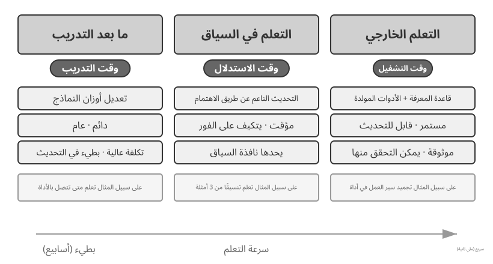
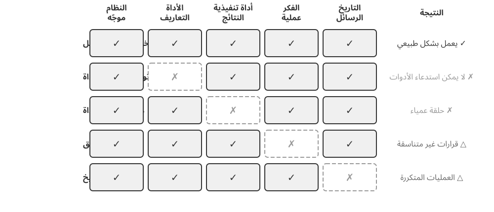
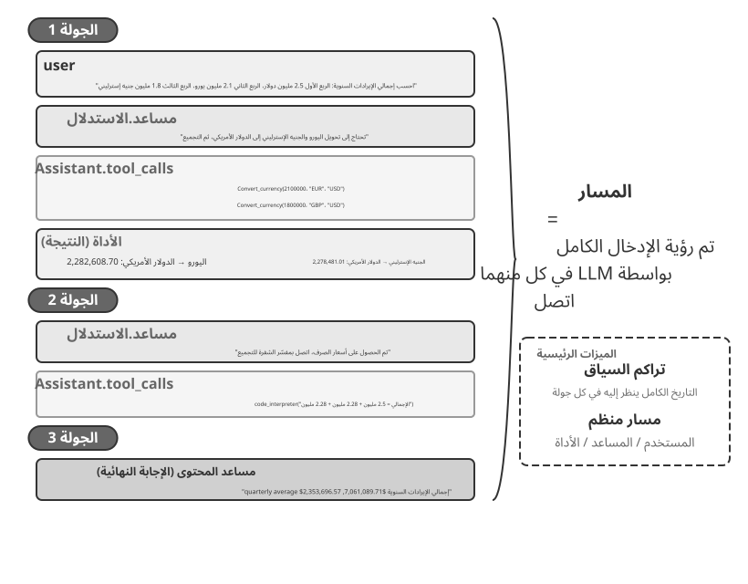
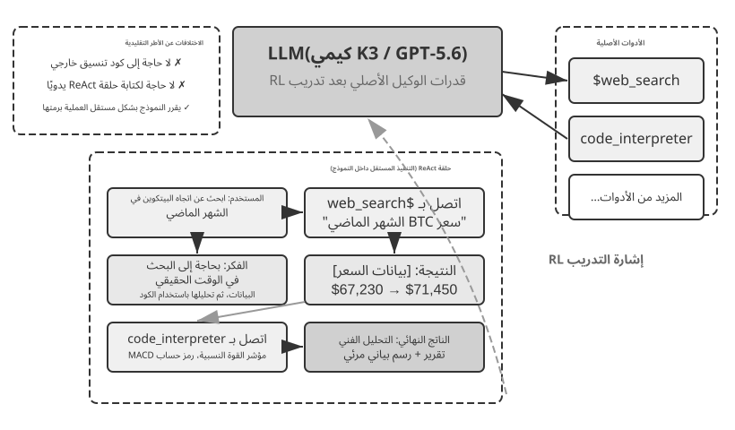
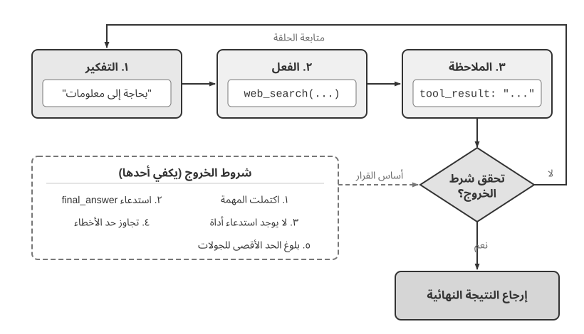

البدء مع وكلاء الذكاء الاصطناعي¶
إذا سبق أن استخدمت Cursor لكتابة الشفرة، ورأيته يبحث في مستودعك ويعدّل عدة ملفات ويعيد تشغيل الاختبارات حتى تنجح، فقد استخدمت بالفعل وكيل ذكاء اصطناعي. وينطبق الأمر نفسه إذا استعنت بخدمة البحث المتعمق لاستقصاء موضوع عبر جولات متكررة من البحث والقراءة، أو جعلت Manus يتحكم في المتصفح لإنجاز مهمة عبر الإنترنت، أو طلبت من مساعد Doubao الهاتفي حجز تذكرة أو إرسال رسالة، أو كلّفت Pine AI بالتفاوض لخفض فاتورة اتصالات.
تتخذ هذه المنتجات أشكالًا مختلفة، لكنها تشترك في سمة واحدة: لم تعد مجرد حوارات سلبية من نوع «تسأل فيجيب النموذج». فالوكيل يخطط لخطوات التنفيذ، ويستعين بالأدوات التي تحتاج إليها المهمة، ويكيّف استراتيجيته مع النتائج التي تظهر تباعًا. وهكذا غدا وكلاء الذكاء الاصطناعي نمطًا جديدًا للتفاعل مع الحاسوب.
ينطلق هذا الفصل من أمثلة عملية، ثم يعود إلى المكونات الأساسية لوكيل الذكاء الاصطناعي. وستتعرف من خلاله إلى قدرات الوكلاء المعاصرين، والبنية التي تقوم عليها، وأنماط التصميم والممارسات الفضلى لبناء منظومات الوكلاء.
إرشاد للقراءة: يمثل هذا الفصل الخريطة المفاهيمية للكتاب كله؛ فهو يقدم جولة موجزة في المعادلة الأساسية، وحلقة التشغيل، والإطار الهندسي، وأنماط تصميم الوكلاء. كما يضع المصطلحات ونقاط الإحالة التي تعتمد عليها الفصول التالية. لا تحاول حفظ كل مفهوم من القراءة الأولى؛ ركّز على الصورة العامة، ثم عد إلى هذا الفصل كلما احتجت إلى استعادة موضعك في الخريطة.
الوكيل الحديث = LLM + السياق + الأدوات¶
يمكن تلخيص جوهر منظومة الوكيل الحديثة في معادلة واحدة: الوكيل = نموذج لغوي كبير (LLM) + سياق + أدوات. وهي معادلة بسيطة وعملية، ما دمنا نفهم كل عنصر بمعناه الواسع:
- النموذج اللغوي الكبير هو محرك التفكير لدى الوكيل: فهو ليس مجرد مجموعة من المعلمات، بل مركز اتخاذ القرار المسؤول عن فهم النية والتفكير والتخطيط والحكم. وتأتي قدراته من المعرفة العامة والكفاءة اللغوية المكتسبتين في التدريب المسبق، ومن استراتيجيات القرار التي يرسخها التدريب اللاحق، كالضبط الدقيق تحت الإشراف والتعلم المعزز اللذين يتناولهما الفصل السابع.
- السياق هو مجموعة معلومات العمل المتاحة للوكيل: ولا يقتصر على النص المدخل إلى النموذج، بل يشمل كل ما يستطيع الوكيل الرجوع إليه عند اتخاذ القرار، مثل حالة البيئة وذاكرة المستخدم ومعرفة المجال وحالة الوكيل وتقدم المهمة. وكما يحتاج الإنسان إلى تقدير الموقف واستحضار خبرته والرجوع إلى المراجع قبل أن يقرر، تضم نافذة السياق المعلومات التي يستطيع الوكيل استخدامها في تلك اللحظة.
- الأدوات هي واجهات الفعل لدى الوكيل: ولا تقتصر على دوال API جاهزة للاستدعاء، بل تشمل جميع الوسائل التي يستطيع بها التأثير في العالم: من الأدوات المحددة سلفًا والمهارات المحمّلة عند الطلب، إلى توليد الشفرة لإنشاء قدرات جديدة، وتفويض العمل إلى وكلاء فرعيين، والتواصل مع المستخدم، والاستجابة للأحداث الخارجية.
وبصياغة أكثر حدسية: الوكيل = محرك التفكير + سياق العمل + واجهات الفعل. فالنموذج يفكر ويقرر، والسياق يمده بالمعلومات التي يبني عليها قراراته، والأدوات تحول تلك القرارات إلى أفعال تؤثر في العالم الخارجي.
تتوافق هذه المكونات الثلاثة تمامًا مع ثلاثة مفاهيم أساسية في RL (انظر الفصل 7). الجدول التالي قراءة اختيارية — إذا لم يكن لديك خلفية RL، فلا تتردد في تخطيه؛ لا شيء يعتمد عليه لاحقًا. إنه موجود فقط لمساعدة القراء الذين يعرفون RL على ربط تلك المعرفة بمصطلحات هذا الكتاب:
| الحدس | مكون الوكيل | مفهوم RL (اختياري) | الدور |
|---|---|---|---|
| محرك التفكير | LLM | السياسة | منطق اتخاذ القرار الذي يحدد "ما يجب فعله بعد ذلك" - في ضوء المعلومات الحالية، اختر الإجراء الأكثر ملاءمة من جميع الخيارات المتاحة |
| سياق العمل | السياق | مساحة المراقبة | جميع المعلومات المتاحة للوكيل - ما يمكنه ملاحظته وقراءته وتذكره والأنظمة التي يمكنه الوصول إليها |
| واجهات الفعل | الأدوات | فضاء الأفعال | مجموعة الأفعال المتاحة للوكيل، من إرسال الرسائل وتنفيذ الشفرة إلى التحكم في الواجهات |
فضاء المراقبة وفضاء الأفعال: الواجهة بين النموذج والعالم¶
يفتتح هينيسي وباترسون الفصل الأول من كتابهما الكلاسيكي Computer Architecture: A Quantitative Approach بالسؤال «What Is Computer Architecture?» ويقدّمان بنية مجموعة التعليمات (Instruction Set Architecture, ISA) بوصفها الواجهة بين البرمجيات والعتاد1. ويمنحنا هذا المنظور طريقة مفيدة لفهم الوكلاء: يشكّل فضاء المراقبة وفضاء الأفعال معًا الواجهة بين النموذج اللغوي الكبير وبيئته الخارجية. يحوّل فضاء المراقبة معلومات البيئة إلى سياق يستطيع النموذج معالجته، بينما يحوّل فضاء الأفعال قرارات النموذج إلى عمليات في العالم الخارجي. فالمعلومة التي لا تدخل فضاء المراقبة كأنها غير موجودة بالنسبة إلى النموذج؛ أما العملية التي لا تدخل فضاء الأفعال فلا يستطيع النموذج إلا اقتراحها بالكلمات، حتى لو عرف بدقة ما ينبغي فعله.
لذلك، عند تثبيت النموذج الأساسي، تكون إعادة تعريف فضاءي المراقبة والأفعال أو توسيعهما غالبًا أهم رافعة هندسية لتحسين أداء الوكيل. وبلغة هذا الكتاب، يعني ذلك توسيع السياق والأدوات. فكثير من المشكلات التي تبدو محتاجة إلى «نموذج أذكى» ليست إلا مشكلات واجهة: إذا أُدخلت بيانات المهمة ذات الصلة في السياق، أو أُتيحت العملية المطلوبة في صورة أداة، فقد تصبح مهمة كانت غير قابلة للحل قابلة له من دون إعادة تدريب النموذج.
Manus: دمج فضاءات كانت منفصلة. قبل ظهور Manus، اتبعت الوكلاء المستخدمة في الإنتاج غالبًا ثلاثة مسارات مستقلة: Deep Research وCoding وComputer Use. وكان Manus أول وكيل إنتاجي واسع التأثير يجمع المسارات الثلاثة في نظام واحد. فقد وسّع الويب فضاء المراقبة لديه، ووسّع نظام الملفات وتنفيذ الشفرة فضاء الأفعال، وأدخل إدراك الشاشة مع النقر والكتابة الواجهات الرسومية في الفضاءين. لم يصبح Manus وكيلًا عامًا بمجرد استبدال النموذج بآخر أقوى؛ بل أخذ اتحاد فضاءات المراقبة والأفعال لثلاثة أنواع من الوكلاء، فمكّن وكيلًا واحدًا من تجاوز حدود المنتجات السابقة.
OpenClaw: مدّ الواجهة إلى الحياة الرقمية للمستخدم. يدفع OpenClaw الفضاءين خطوة أخرى إلى الخارج. فهو يستقبل المهام ويعيد النتائج عبر قنوات المراسلة التي يستخدمها الناس بالفعل، مثل WhatsApp وTelegram وSlack وDiscord وiMessage وغيرها، ولذلك يمكن الوصول إلى الوكيل من أي مكان تقريبًا. كما يستطيع الـ Gateway المحلي أولًا، مع الأدوات والإضافات والمهارات المصرّح بها، الاتصال بتطبيقات سحابية مثل Google Drive وNotion، فضلًا عن نظام الملفات المحلي. وبذلك يمكن للملفات الرقمية الموزعة بين الحسابات والأجهزة، بعد تفويض صريح من المستخدم، أن تدخل فضاء مراقبة وكيل واحد وأن تعالجها أدواته. وبالمقارنة مع الصورة الأولى من Manus التي تمحورت حول صندوق رمل سحابي معزول وكانت تتطلب عادة رفع الملفات أو إعداد موصّل منفصل، يعبر OpenClaw المحلي أولًا حدود بيانات أوسع. وقد أضاف Manus لاحقًا موصّل Google Drive والوصول إلى الملفات المحلية من سطح المكتب، وهو ما يعزز الفكرة نفسها: كثيرًا ما يكون تطور المنتج هو بالضبط توسع فضاءي المراقبة والأفعال2.
لا يعني توسيع الفضاءات حشو النموذج بكل المعلومات والأدوات دفعة واحدة. فالسياق غير ذي الصلة يضيف ضوضاء، وكثرة الأدوات تزيد تكلفة الاختيار ومخاطر الأمان. ينبغي أن يكون التوسع المفيد عند الطلب، ومرتبطًا بالمهمة، وقابلًا للضبط: يضع الاسترجاع المعلومات الصحيحة في السياق، ولا يكشف اكتشاف الأدوات إلا الأفعال المطلوبة حاليًا، وتقيّد الصلاحيات والتحقق من النتائج تلك الأفعال. وتفصّل الفصول اللاحقة كلًا من هذه الأساليب الهندسية.
إن فهم وظيفة كل مكوّن وطريقة تكامله مع المكوّنين الآخرين هو أساس بناء وكلاء فعّالين. وسنبدأ بأكثر العناصر وضوحًا، أي الأدوات أو واجهات الفعل، ثم ننتقل إلى النموذج والسياق. يبيّن الجدول التالي كيف تختلف أنواع الوكلاء على امتداد هذه الأبعاد الثلاثة:
| منتج الوكيل | سياق العمل | واجهات الفعل | الاستراتيجية |
|---|---|---|---|
| وكلاء البرمجة (مثل المؤشر) | وثائق المتطلبات وقاعدة التعليمات البرمجية والبيئة الطرفية | مفتوح (الاستدلال الداخلي، البحث عن التعليمات البرمجية، قراءة/كتابة الملفات، تنفيذ الأوامر، وما إلى ذلك) | التطوير المتزايد: فهم المتطلبات ← البحث عن التعليمات البرمجية ذات الصلة ← تحرير التعليمات البرمجية ← الاختبار والتحقق ← التصحيح والإصلاح |
| وكلاء البحث (مثل البحث العميق) | موارد الويب، وقواعد البيانات الأكاديمية، والملفات المحلية | مفتوح (الاستدلال الداخلي، استعلامات البحث، قراءة الويب، إنشاء الملخص) | التعميق التكراري: ضبط اتجاه البحث بناءً على المعلومات الموجودة، وتجميع تقرير كامل تدريجيًا |
| وكلاء التحكم بالكمبيوتر (على سبيل المثال، Browser Use) | شاشة الكمبيوتر، صفحات المتصفح، نظام الملفات | مفتوحة (الاستدلال الداخلي، النقر، الكتابة، التمرير، لقطات الشاشة، تنفيذ التعليمات البرمجية، وما إلى ذلك) | الإدراك البصري + التشغيل: شاشة المراقبة ← تحديد العناصر المستهدفة ← تنفيذ الإجراءات ← التحقق من النتائج |
| وكلاء مساعد الهاتف (على سبيل المثال، Doubao) | شاشة الهاتف، التطبيقات المثبتة | مفتوح (الاستدلال الداخلي، النقر، التمرير، الكتابة، فتح التطبيقات، وما إلى ذلك) | فهم النية + التحكم في التطبيق: فهم احتياجات المستخدم ← تحديد موقع التطبيق المستهدف ← تنفيذ الإجراءات ← تأكيد الاكتمال |
| وكلاء المهام الشخصية (على سبيل المثال، Pine AI) | معلومات حساب المستخدم، والفواتير التاريخية، وقاعدة معارف مزود الخدمة | مفتوح (الاستدلال الداخلي، إجراء المكالمات، إرسال رسائل البريد الإلكتروني، ملء النماذج، التأكيد مع المستخدم) | تنفيذ المهام متعددة الخطوات: جمع المعلومات ← صياغة استراتيجية التفاوض ← الاتصال بمزود الخدمة ← التفاوض ← تقرير النتائج |
تشترك هذه الأنظمة في ثلاث سمات: فضاء عمل مفتوح — فالوكيل لا يختار من مجموعة أزرار ثابتة، بل يستطيع توليد اللغة الطبيعية والشفرة بحرية؛ وتفكير داخلي يسبق الفعل؛ وتفاعل مستمر يكيّف خلاله استراتيجيته مع ما يتلقاه من البيئة. وتنشأ هذه القدرات من تآزر محرك التفكير وسياق العمل وواجهات الفعل؛ أي من تآزر النموذج اللغوي والسياق والأدوات.
الأدوات: واجهات فعل الوكيل¶
الأدوات هي جسر الوكيل إلى العالم الخارجي؛ فهي تنقله من مراقب سلبي إلى نظام قادر على البحث وكتابة الملفات وتشغيل الشفرة واستدعاء واجهات API وإرسال الرسائل والتحكم في الواجهات. من دون أدوات لا يتجاوز الوكيل توليد النص، أما بها فيستطيع تنفيذ أفعال حقيقية في الأنظمة الخارجية.
لمناقشة الأدوات بشكل منهجي، يمكننا تصنيفها إلى خمسة أنواع حسب اتجاه تفاعل الوكيل مع العالم. في هذه المرحلة، تكفي نظرة عامة موجزة عن السيناريوهات التمثيلية لكل نوع لتكوين الصورة العامة؛ الفصول اللاحقة تعالج كل منها بعمق.
أدوات الإدراك تسمح للوكيل بالوصول إلى المعلومات: توفر محركات البحث بيانات الويب في الوقت الفعلي، وتقرأ أنظمة الملفات المستندات المحلية، وتتصل واجهات برمجة التطبيقات وقواعد البيانات بالخدمات الخارجية والبيانات الأساسية للمؤسسة.
أدوات التنفيذ تسمح للوكيل بالعمل على الأنظمة الخارجية: تنفيذ التعليمات البرمجية وعمليات الملفات وأوامر النظام واستدعاءات API الخارجية لتحويل القرارات إلى إجراءات ملموسة.
أدوات التعاون تسمح للوكيل بتقسيم العمل مع الوكلاء الآخرين: تفويض المهام المتخصصة إلى الوكلاء الفرعيين، أو طلب تأكيد بشري في نقاط القرار الرئيسية، أو تنسيق الإجراءات في أنظمة متعددة الوكلاء.
تعمل الأدوات المحفَّزة بالأحداث على نحو يختلف تمامًا عن الفئات الثلاث الأولى؛ فالوكيل لا يستدعيها، بل تصله منها إشارة خارجية تدفعه إلى بدء العمل. قد تكون الإشارة رسالة بريد إلكتروني جديدة، أو حلول موعد محدد، أو طلب Webhook من نظام آخر. عندئذ ينشط الوكيل ويبدأ التفكير والتنفيذ. ومع أن الوكيل لا يستدعي هذه الأدوات بنفسه، فإنها تظل قناة يتفاعل عبرها مع العالم الخارجي، ولذلك نعدّها جزءًا من منظومة أدواته بمعناها الواسع.
أدوات التواصل مع المستخدم هي القنوات التي يخاطب الوكيل المستخدم عبرها. فإذا كانت أدوات التنفيذ تغيّر حالة العالم الخارجي، فإن أدوات التواصل تنقل المعلومات: كأن تعرض تقدم المهمة، أو ترسل تحديثًا استباقيًا، عبر رسالة نصية أو مكالمة صوتية أو بريد إلكتروني.
يعرض الفصل الرابع هذا التصنيف كاملًا، إلى جانب مبادئ تصميم الأنواع الخمسة. فجودة تصميم الأداة تحدد مباشرةً ما يستطيع الوكيل إنجازه بموثوقية: الواجهة الغامضة تدفع النموذج إلى إساءة استخدامها، والمعالجة الرديئة للأخطاء قد تجعل عطلًا واحدًا يوقف الوكيل، والصلاحيات الواسعة قد تحوّل هفوة بسيطة إلى خطأ يتعذر تداركه. ومع انتشار معيار MCP (بروتوكول سياق النموذج)، صار دمج الأدوات قريبًا من سهولة تثبيت إضافة برمجية. تتسع المنظومة سريعًا، لكن مبادئ التصميم الجيد تظل ثابتة.
استدعاء الأدوات (المعروف أيضًا باسم استدعاء الوظائف) هو القدرة الأساسية لوكلاء LLM الحديثين: فهو يتيح للنموذج استدعاء أدوات خارجية بطريقة منظمة، مما يحول LLM من مولد نص خالص إلى نظام ذكي يمكنه العمل من خلال واجهات خارجية. يستخدم هذا الكتاب مصطلح "استدعاء الأداة" طوال الوقت.
يمر استدعاء الأداة بأربع خطوات. أولًا، يعرّف السياق النموذج بالأدوات المتاحة، بما في ذلك أسماؤها وأغراضها ومعاملاتها. ثم يقرر النموذج هل يحتاج إلى أداة، وأي أداة يختار، وما الوسائط التي يمررها إليها. وبعد التنفيذ تُلحق النتيجة بالسياق، فيحدد النموذج خطوته التالية على ضوئها. هذه الحلقة هي أساس نمط ReAct الذي سنعرضه لاحقًا في الفصل.
بالنسبة للاستعلام عن الطقس، يكون التمثيل المبسط للعملية المكونة من أربع خطوات على مستوى API كما يلي:
Step 1: Declare tools Step 2: Model decides to call
tools: [{ assistant: {
name: "get_weather", tool_calls: [{
parameters: { function: "get_weather",
city: "string" arguments: {city: "Beijing"}
} }]
}] }
Step 3: Result appended to context Step 4: Model responds based on result
tool: { assistant: {
tool_call_id: "call_1", content: "Today in Beijing: 28°C, sunny."
content: '{"temp":28,"sky":"clear"}' }
} }
يقوم المطور فقط بتعريف الأدوات وتنفيذ الاستدعاءات؛ يقرر النموذج نفسه ما إذا كان سيتم الاتصال به، وأي أداة سيتم الاتصال بها، وما هي الوسائط التي سيتم تمريرها. يتناول الفصل الثاني بنية API بالتفصيل.
عند تصميم أدوات للوكيل، يمكن البدء بأضيق قدرة تتطلبها المهمة، ثم توسيعها تدريجيًا كلما ازدادت المهمة تعقيدًا. فإذا كانت المهمة لا تتجاوز العمليات الحسابية الأساسية، تكفي حاسبة ذات معاملات محددة بوضوح؛ أما إذا تطورت لتشمل قراءة جداول البيانات، وتنظيف القيم المفقودة، وحساب الإحصاءات، ورسم المخططات، فإن مفسر Python المقيّد يكون أسهل في التركيب والاستكشاف من الاستمرار في إضافة أدوات متخصصة. لكن العمومية توسع أيضًا مجال الخطأ وسطح الهجوم: يجب تشغيل الشفرة في صندوق حماية معزول، مع تعطيل الوصول إلى الشبكة افتراضيًا، ومنع قراءة الملفات خارج دليل العمل المصرّح به، وفرض حدود على زمن التنفيذ واستخدام CPU والذاكرة وحجم المخرجات.
وبالمثل، تصلح أداة تسجيل واحدة لتوثيق عملية تنفيذ واحدة؛ أما في المهام الطويلة الممتدة ساعات أو أيامًا، فيمكن لدليل عمل افتراضي خاضع للرقابة أن يحفظ الخطة، والنتائج الوسيطة، وسجلات التنفيذ، والمخرجات النهائية معًا، ليتيح للوكيل مواصلة العمل عبر تشغيلات متعددة. وينبغي أيضًا تقييد المسارات القابلة للقراءة والكتابة، والسعة، وأنواع الملفات داخل هذا الدليل، ومنع تجاوز حدوده، بدلًا من كشف نظام ملفات المضيف بأكمله للوكيل.
لا تتفوق الأدوات العامة دائمًا على الأدوات المتخصصة. فالعمليات عالية المخاطر أو الخاضعة لقيود أعمال صارمة—مثل الدفع، وحذف البيانات، وإرسال البريد الإلكتروني، والنشر في بيئة الإنتاج—ينبغي أن تظل مغلفة في أدوات متخصصة ذات معاملات صريحة وصلاحيات محدودة وقابلية تدقيق شاملة، مع إضافة المعاينة والتأكيد البشري عند الحاجة. وعليه، فإن المبدأ الأساسي لتصميم الأدوات هو: تُستخدم القدرات الأساسية العامة للتركيب والاستكشاف؛ وتُستخدم الأدوات المتخصصة لتقييد العمليات عالية المخاطر وتطبيق قواعد الأعمال الصارمة.
LLM: محرك الاستدلال الخاص بالوكيل¶
يعد نموذج اللغة الكبير (LLM) هو جوهر عملية اتخاذ القرار لدى الوكيل. بالنظر إلى طلب المستخدم، يجب عليه أولاً استنتاج النية الحقيقية (ما يقوله المستخدمون غالبًا ليس ما يريدونه بالفعل)، ثم تقسيم المهمة الغامضة أو المعقدة إلى خطوات قابلة للتنفيذ. أثناء التنفيذ، يستمر في اتخاذ القرارات: ما يجب فعله بعد ذلك، وما إذا كان سيتم استدعاء أداة، وأي أداة، وبأي وسيطات. تأتي القدرة على الفهم والتخطيط والتنفيذ من المعرفة المتراكمة أثناء التدريب المسبق، وهي الأساس الذي يعتمد عليه سير العمل والوكلاء المستقلون على حدٍ سواء.
تتمثل القدرة المميزة لوكلاء LLM في الاستدلال الداخلي — قبل التصرف، يستطيع الوكيل التخطيط والتفكير خلال المهمة. وهذا لا يغير البيئة الخارجية، ولكنه يحسن الإجراءات التي تتبعها بشكل ملحوظ. تأتي هذه القدرة من التدريب المسبق (التدريب الأولي على كميات هائلة من النصوص على الإنترنت، والتي من خلالها يتعلم النموذج أنماط اللغة والمعرفة العالمية): يعتمد النموذج على أنماط التفكير المشفرة في المعرفة الإنسانية، بما في ذلك القوانين الرياضية، والعلاقات السببية، واستراتيجيات تحليل المشاكل. وبالتالي فإن تفكير الوكيل ليس تجربة وخطأ أعمى؛ فهو يبني على مجموعة منظمة من المعرفة.
تمكّن هذه القدرة على الاستدلال المنظم الوكيل القائم على نموذج لغوي كبير من مباشرة مهام جديدة تمامًا. ويتضح ذلك في مفهومين: التعميم من دون أمثلة، والتكيف من أمثلة قليلة. ففي التعميم من دون أمثلة (Zero-shot Generalization)، يعالج الوكيل مهمة لم يرها من قبل بتركيب معارفه السابقة، من غير أن يُعرض عليه مثال. وقد لا تكون علّمته صراحةً كتابة قصيدة عن فيزياء الكم، لكنه يستطيع صياغة قصيدة مقبولة اعتمادًا على معرفته باللغة والفيزياء.
ويستطيع الوكيل أيضًا تحقيق التكيف من أمثلة قليلة (Few-shot Adaptation): يكفي أن يتضمن الموجّه مثالين أو ثلاثة كي يتعلم نمط مهمة جديدة. فإذا رأى بضعة أمثلة على التحويل من «تعليق المستخدم» إلى «تصنيف المشاعر»، استطاع تصنيف تعليقات جديدة. وباختصار: التعميم من دون أمثلة يعني إنجاز المهمة بلا نموذج سابق، والتكيف من أمثلة قليلة يعني تعلّم النمط من عدد محدود من النماذج.
النموذج كوكيل: عندما يصبح النموذج نفسه هو المنتج¶
يعد نموذج "النموذج كوكيل" هو أحدث اتجاه في تطوير وكيل الذكاء الاصطناعي. تستوعب النماذج المتقدمة استدعاء الأداة كقدرة أصلية من خلال التدريب اللاحق (خاصة التعلم المعزز): متى يتم استدعاء أداة، وأي منها، وبأي وسائط - يقرر النموذج كل ذلك، دون الحاجة إلى تنسيق يدوي. هذا لا يجعل طبقة الإطار أقل أهمية. على العكس من ذلك: كلما كان النموذج أقوى، زادت أهمية منظومة التشغيل المحيط به. في سياق الوكيل، يعتبر Harness بمثابة البنية التحتية الهندسية التي توجه قدرة النموذج إلى تنفيذ المهام بشكل موثوق. وهي تشمل إدارة السياق، وواجهات الأدوات، وقيود السلامة، وآليات التحقق والتصحيح (انظر القسم الأخير من هذا الفصل).
كلما زادت سلطة اتخاذ القرار في النموذج، زاد تأثير القرار الخاطئ - الأمر الذي يستدعي قيودًا أكثر دقة، والتحقق، والتصحيح للحفاظ على موثوقيته. الميزة الحقيقية لموفري النماذج ليست "جعل إطار العمل أرق" ولكن القدرة على تحسين النموذج والأدوات المحيطة به، والتكرار بشكل مستمر.
لكن سؤالًا أعمق يبقى معلقًا: إذا استمرت النماذج في التحسن، فهل ستستبطن في النهاية ما تؤديه منظومات التشغيل اليوم؟ يستعرض ريتش ساتون في «الدرس المرير» نمطًا تكرر على مدى سبعين عامًا من أبحاث الذكاء الاصطناعي3: يشفّر الباحثون فهمهم للمجال داخل النظام، فيحققون مكاسب قصيرة الأجل، ثم يخسرون على المدى البعيد أمام أساليب عامة — كالبحث والتعلم — تتوسع مع الحوسبة والبيانات. ومن هذا المنظور، كم من القيود وآليات التحقق والتصحيح في منظومة التشغيل يُعد معرفة بشرية مسبقة سيستبطنها النموذج يومًا ما؟ يلخّص موقف الكتاب مبدآن: نوافق على الاتجاه، ونتعامل بواقعية مع الوتيرة. فمن حيث الاتجاه، لا شك في أن النماذج ستستبطن أجزاءً متزايدة من منظومة التشغيل؛ فقد كان استدعاء الأدوات والتخطيط الممتد يعتمدان سابقًا على تنسيق خارجي، ثم صارا من قدرات النموذج الأصيلة. لكن هذا الاستبطان أبطأ عمليًا مما يوحي به الحدس: فالتدريب يستغرق شهورًا، ولا يستطيع نموذج واحد أن يستوعب دفعة واحدة جميع قيود الأعمال الواقعية وتفضيلاتها. وتكمن قيمة منظومة التشغيل تحديدًا عند حدود قدرة النموذج الراهنة. لذلك لا تعارض هندسة منظومة التشغيل «الدرس المرير»، بل تطبقه على المقياس الزمني للهندسة: ما لا يستطيع النموذج أداءه بثبات، تسنده المنظومة أولًا؛ وحين يستبطن النموذج طبقةً منه، تتخلى المنظومة عنها وتنتقل إلى حماية جبهة القدرة التالية. ويمتد هذا الخيط في أنحاء الكتاب: يقدم الفصل الثاني إجابة عملية من منظور هندسة السياق، ويناقش الفصل الثامن كيف يختار الوكيل تحديث النظام التالي ويتحقق منه اعتمادًا على خبرة التشغيل، ثم تعود الخاتمة إلى السؤال كاملًا.
آليات تعلم الوكيل: من التكيف السياقي إلى التحديثات المستمرة¶
أشارت المناقشة السابقة إلى أن النموذج يمكنه استيعاب سياسات استخدام الأدوات كقدرات أصلية من خلال التعلم المعزز. لكن التغييرات في سلوك الوكيل لا تحدث أثناء التدريب فقط. استنادًا إلى مكان حدوث التحديث ومدة استمراره، يمكن فهم هذه التغييرات على أنها ثلاثة مسارات تكميلية (الشكل 1-1): التكيف السياقي داخل المهمة، والتحديثات عبر المهام للعناصر الخارجية، وتحديثات المعلمات أثناء دورات التدريب.

يحدث التكيف السياقي ضمن المهمة الحالية. بمجرد دخول الأمثلة والحالة ونتائج الاسترجاع إلى السياق، يمكن للنموذج تعديل سلوكه على الفور، ولكن هذا لا يغير الحالة المستمرة للجلسة التالية. مميزاتها هي السرعة والتكلفة المنخفضة. تنشأ حدودها من نافذة السياق وطريقة تنظيم المعلومات. ويشرح الفصل الثاني بالتفصيل كيفية عمل هذا النوع من التكيف.
لكي تستمر التغييرات عبر المهام، يمكن للنظام تحديث العناصر الخارجية: يمكن تنظيم الحقائق والخبرة في وثائق المعرفة، ويمكن كتابة الاستراتيجيات المعبر عنها باللغة في موجّه أو مهارة، ويمكن ترميز الإجراءات والقيود الحتمية في البرامج والأدوات. هذه العناصر قابلة للتدقيق والمراجعة، ولكن لا يزال يتعين على الوكيل الوصول إليها في وقت التنفيذ من خلال السياق أو واجهات الأداة. تحدد الفصول من الثالث إلى الخامس أسس المعرفة والبرامج، بينما يناقش الفصل الثامن كيف يمكن إنشاء هذه التحديثات من المسارات التشغيلية التي تم تقييمها.
عندما تكون القدرة المستهدفة عالية الأبعاد، كفهم الصور الطبية أو إنتاج لغة طبيعية بأسلوب معين أو اتباع سياسة ضمنية لاتخاذ القرار، ويتعذر التعبير عنها كاملة بقواعد خارجية، فلا بد من تحديث معلمات النموذج في مرحلة ما بعد التدريب. وتزيد كلفة نشر تحديثات المعلمات، لكنها قد تحقق تعميمًا طبيعيًا واسع النطاق؛ ويعرض الفصل السابع أساليبها بصورة منهجية. ومن ثم فالمسارات الثلاثة ليست فئات متنافية، بل آليات متكاملة تعمل على مقاييس زمنية مختلفة: يتيح السياق التكيف الآني، وتتيح المكونات الخارجية تراكمًا منضبطًا، وتستوعب المعلمات القدرات التي يصعب التصريح بها.
السياق: مجموعة عمل الوكيل¶
السياق هو مجموعة العمل من المعلومات المتاحة للوكيل في كل نقطة قرار. مثلما يحتاج الشخص الذي يتخذ قرارًا إلى المواد الصحيحة الموجودة على الطاولة - تعليمات المهمة، والأدلة المرجعية، والمراسلات السابقة، وأحدث البيانات - فإن نافذة السياق الخاصة بالوكيل هي المعلومات التي يمكنه استخدامها. من منظور API (المفصل في الفصل 2)، يتكون سياق كل استدعاء LLM من خمسة أجزاء:
- موجّه النظام: على عكس الموجّهات التي يُدخلها المستخدمون أثناء المحادثة، تتم كتابة موجّه النظام بواسطة المطور وتظل ثابتة طوال المحادثة بأكملها. إنه "الوصف الوظيفي" للوكيل، والذي يحدد هويته وأذوناته وقواعد سلوكه. هندسة الموجّهات الدقيقة لموجّه النظام هي الطريقة التي نشكل بها السلوك التشغيلي للوكيل. يحمل موجّه النظام أيضًا ذاكرة المستخدم التي تستمر عبر الجلسات (معلومات شخصية مثل التفضيلات والسلوك السابق وإعدادات الخلفية؛ راجع الفصل 3)، بالإضافة إلى الحالة البيئية المحقونة ديناميكيًا.
- تعريفات الأداة: تعلن الأسماء والأوصاف الوظيفية وتنسيقات المعلمات للأدوات المتاحة للوكيل. بدون تعريفات الأدوات، لا يستطيع الوكيل التعرف على أي أدوات أو استدعائها - ستتحقق دراسة الاستئصال (التجربة 1-1) من ذلك. تشكل تعريفات الأداة، جنبًا إلى جنب مع موجّه النظام، البادئة الثابتة التي تظل دون تغيير طوال المحادثة. (هذا هو النمط الأساسي؛ منذ عام 2026، يمكن لأطر الإنتاج أيضًا تحميل مخططات الأداة الكاملة عند الطلب في نهاية السياق دون كسر البادئة - راجع قسم تعريفات الأداة في الفصل 2 والفصل 4.)
- رسائل المستخدم: مدخلات من المستخدم. قد تحتوي رسائل المستخدم أيضًا على المعرفة الخارجية التي تم استرجاعها ديناميكيًا عبر RAG (إنشاء الاسترجاع المعزز، راجع الفصل 3 للحصول على التفاصيل) - والتي تغطي معلومات تتجاوز قطع بيانات التدريب أو معرفة المجال الخاص.
- رسائل المساعد: الاستجابات التي تم إنشاؤها مسبقًا بواسطة النموذج، والتي يمكن أن تحتوي على ما يصل إلى ثلاثة أجزاء —
reasoning(سلسلة الأفكار الداخلية، والحفاظ على التماسك وإمكانية تفسير القرار)، وcontent(الاستجابة للمستخدم)، وtool_calls(الطريقة التي يتخذ بها الوكيل الإجراء). في استجابة محددة، قد لا تظهر هذه الأجزاء الثلاثة جميعها في وقت واحد: على سبيل المثال، عندما يقرر الوكيل استدعاء أداة، عادةً ما تحتوي فقط علىreasoning+tool_calls؛ عند إعطاء إجابة نهائية، عادةً ما تحتوي فقط علىreasoning+content. - نتائج الأداة: الإخراج الذي يتم إرجاعه بعد تنفيذ إطار عمل الوكيل للأداة. هذه النتائج هي الأساس المباشر لخطوة التفكير التالية التي يتخذها الوكيل، وما الذي يتيح له التعلم من النتائج بدلاً من تكرار أخطائه.
يشكل العنصران الأولان (موجّه النظام + تعريفات الأداة) البادئة الثابتة؛ تشكل الرسائل الثلاثة الأخيرة (رسائل المستخدم + رسائل المساعد + نتائج الأداة) سجل الرسائل الديناميكي الذي ينمو مع كل تفاعل. تشكل هذه الأجزاء الخمسة معًا سياق كل استنتاج LLM.
هل كل مكون لا غنى عنه حقًا؟ الطريقة الأكثر مباشرة لمعرفة ذلك هي دراسة الاستئصال — وهي الطريقة التشخيصية لاستبعاد الأسباب واحدًا تلو الآخر: إزالة المكون أ ومعرفة ما إذا كان النظام لا يزال يعمل، ثم المكون ب، وهكذا، حتى تتضح مساهمة كل مكون. تطبق التجربة 1-1 هذه الطريقة تمامًا على المكونات الخمسة المذكورة أعلاه. النتائج مباشرة: بدون تعريفات الأداة، يكون الوكيل غير قادر تمامًا على التصرف؛ بدون نتائج الأداة، لا تتلقى تعليقات من الخطوة السابقة، لذلك تستدعي نفس الأداة بشكل متكرر، وتصبح عالقة في حلقة لا نهائية؛ وبدون التعليل في الرسائل المساعدة، تبدأ القرارات المتتالية في التناقض مع بعضها البعض؛ بدون سجل الرسائل، يفقد الوكيل استمرارية المهمة ويعيد تشغيل المهمة بأكملها من البداية، مع تكرار الخطوات التي تم تنفيذها بالفعل. ويعتمد دور كل مكون على الأدلة التجريبية، وليس فقط على الاستدلال النظري.
التجربة 1-1 ★★: الدور الحاسم للسياق¶
لقد بحثنا في كيفية قيام كل مكون من مكونات السياق بتشكيل سلوك الوكيل من خلال دراسة استئصال منهجية. من بين المكونات الخمسة المذكورة أعلاه، تم اختبار أربعة - تم استثناء موجّه النظام، باعتباره تعريف الهوية الأساسي للوكيل: بدونه لن يكون لدى الوكيل أي وعي بالدور على الإطلاق، وسيكون الاختبار بلا معنى. كما يوضح الشكل 1-2، أجريت التجربة على خمس مجموعات خاضعة للرقابة: خط أساسي كامل يحتفظ بكل مكون، بالإضافة إلى أربع مجموعات تفتقد كل منها واحدة، لمراقبة تأثير كل مكون على أداء الوكيل.

كشفت النتائج التجريبية عن الدور الذي لا يمكن الاستغناء عنه لكل مكون من مكونات السياق. تعريفات الأداة (جزء من البادئة الثابتة) هي أساس قدرة الوكيل على التصرف؛ وبدونها، لا يستطيع الوكيل التعرف على أي أدوات أو الاتصال بها. نتائج الأداة هي المفتاح للتحكم في الحلقة المغلقة؛ يؤدي غيابهم إلى حرمان الوكيل من ردود فعل التنفيذ ويؤدي إلى وقوعه في حلقة لا نهائية. تحافظ عملية الاستدلال (جزء الاستدلال في الرسائل المساعدة) على أسباب قرارات الوكيل السابقة، مما يجعل الاستدلال العام أكثر تماسكًا ويمنع القرارات المتعارضة. سجل الرسائل (رسائل المستخدم، ورسائل المساعد، ونتائج الأداة من الجولات السابقة) يمنع العمليات المتكررة، ويحافظ على تماسك تنفيذ المهام، ويتجنب تكرار نفس الأخطاء.
الرؤية الأساسية للتجربة: يحدد السياق المعلومات التي يمتلكها الوكيل في وقت اتخاذ القرار، ولا يستطيع الوكيل اتخاذ القرار إلا بناءً على تلك المعلومات. تمامًا كما لا يستطيع الشخص الذي يفتقد المستندات المهمة إصدار أحكام سليمة، فإن الوكيل الذي يفتقد أي مكون من مكونات السياق يعاني من خسارة فادحة في القدرة على اتخاذ القرار - بدون تعريفات الأدوات، لا يعرف ما هي الأدوات الموجودة؛ وبدون نتائج التنفيذ السابقة، لا يعرف ما تم إنجازه بالفعل.
حلقة ReAct¶
ومع توفر المكونات الثلاثة، ينشأ سؤال طبيعي: كيف تعمل هذه العناصر معًا؟ حلقة ReAct هي الآلية الأساسية التي تربط LLM والسياق والأدوات في نظام واحد. يمكننا فحصها خطوة بخطوة.
يُطلق على النمط الأساسي الذي يقوم الوكيل من خلاله بتنفيذ المهمة اسم ReAct (الاستدلال + التصرف). يذكر الاسم التفكير والتصرف فقط، ولكن الحلقة الفعلية لها ثلاث مراحل: النموذج أولاً الأسباب حول ما يجب فعله بعد ذلك، ثم يستدعي الأداة للتصرف، ثم ملاحظة نتيجة الأداة والأسباب المتعلقة بالخطوة اللاحقة. تتكرر حلقة "السبب ← الفعل ← الملاحظة ← السبب ← الفعل ← الملاحظة" حتى تنتهي المهمة.
فكر في مثال ملموس - تجميع الإيرادات عبر عملات متعددة - لفهم مسار الوكيل: سجل الرسائل الذي يتراكم أثناء عمل الوكيل، والذي يشمل رسائل المستخدم، والرسائل المساعدة (مع أسبابها واستدعاءات الأدوات)، ونتائج الأداة. في كل استدعاء LLM، يكون السياق الكامل الذي يتلقاه النموذج هو البادئة الثابتة (موجّه النظام + تعريفات الأداة) بالإضافة إلى المسار (سجل الرسائل الديناميكي) (الشكل 1-3). يوضح هذا حقيقة أساسية: سياق الوكيل = بادئة ثابتة + مسار. بشكل ملموس، البادئة الثابتة هي أول مكونين من المكونات الخمسة المذكورة أعلاه (موجّه النظام + تعريفات الأداة)؛ المسار هو الثلاثة الأخيرة (رسائل المستخدم + رسائل المساعد + نتائج الأداة، والتي تنمو مع كل تفاعل). من هذا السياق الكامل، يقوم LLM بإنشاء استجابته التالية، والتي يتم بعد ذلك إلحاقها بمسار المكالمة اللاحقة.

هنا هو هيكل المسار، في الكود الكاذب:
trajectory = [
{role: "user", content: "Based on the company's quarterly revenue: Q1 2.5M USD, Q2 2.1M EUR, Q3 1.8M GBP, Q4 380M JPY, calculate the company's total annual revenue and average quarterly revenue"},
# First iteration - LLM receives the above trajectory and generates a response
{role: "assistant",
reasoning: "Need to convert all currencies to USD...",
content: "", # No direct reply to the user
tool_calls: [
{name: "convert_currency", args: {amount: 2100000, from: "EUR", to: "USD"}},
{name: "convert_currency", args: {amount: 1800000, from: "GBP", to: "USD"}},
{name: "convert_currency", args: {amount: 380000000, from: "JPY", to: "USD"}}
]},
# Agent framework executes tools, adds results to trajectory
{role: "tool", content: "EUR->USD: 2282608.7"},
{role: "tool", content: "GBP->USD: 2278481.01"},
{role: "tool", content: "JPY->USD: 2541806.02"},
# Second iteration - LLM receives the complete trajectory, including tool results
{role: "assistant",
reasoning: "Conversion results obtained, now need to aggregate and calculate...",
content: "",
tool_calls: [
{name: "code_interpreter", args: {code: "total = 2500000 + 2282608.7 + ..."}}
]},
{role: "tool", content: "Total: $9,602,895.73, Average: $2,400,723.93..."},
# Third iteration - LLM receives the complete trajectory and generates the final answer
{role: "assistant",
reasoning: "All calculations complete, summarizing results...",
content: "FINAL ANSWER: Total revenue $9,602,895.73..."}
]
لاحظ أن موجّه النظام وتعريفات الأداة لا تظهر في المسار - فهي بمثابة بادئة ثابتة ويتم إضافتها تلقائيًا إلى المسار قبل كل استدعاء LLM.
في تجربتنا، كانت هذه الحلقة مرئية بوضوح. في الجولة الأولى، قام الوكيل بتحليل المهمة واستدعاء ثلاث أدوات لتحويل العملات بالتوازي؛ وفي الحالة الثانية، تم تغذية نتائج التحويل إلى مفسّر الشفرة لإجراء عمليات حسابية أكثر كثافة؛ وفي السؤال الثالث، بعد التأكد من اكتمال جميع الحسابات، قدم الإجابة النهائية. تم إكمال مهمة معقدة متعددة الخطوات في 3 تكرارات و4 استدعاءات للأدوات.
تكمن أناقة هذا التصميم في الطبيعة التراكمية للسياق. يتلقى كل استدعاء LLM المسار الكامل، بحيث يعرف النموذج مرحلة المهمة التي يمر بها، وما تمت تجربته من قبل، وما هي النتيجة. مثلما يستمر الأشخاص في المراجعة والتلخيص أثناء حل المشكلة، يحتفظ الوكيل برؤية عالمية للمهمة من خلال مسارها. ولأن المسار منظم - رسائل المستخدم، والرسائل المساعدة (الاستدلال + استدعاءات الأداة)، ونتائج الأداة، كلها منفصلة بشكل واضح - فإن النظام قابل للتفسير وتصحيح الأخطاء بدرجة كبيرة.
المسار هو أكثر من مجرد سجل تنفيذ؛ فهو دليل على قدرة الوكيل. ويكشف تحليل المسارات على نطاق واسع عن أنماط سلوكية، ومسارات أفضل لاتخاذ القرار، وتصميمات أفضل للأدوات. ويمكن أيضًا استخلاص بيانات المسار في قاعدة معرفية، أو استخدامها لتدريب نماذج وكلاء أقوى من خلال التعلم المعزز، مما يؤدي إلى إغلاق حلقة التعلم من التجربة.
الآن وبعد أن فهمنا حلقة تشغيل الوكيل، فإننا نفحص تجربتين لنرى كيف تقودها النماذج المختلفة.
التجربة 1-2 ★: قدرة Kimi K3 الأصلية بوصفه وكيلًا¶
تستعرض هذه التجربة القدرة الوكيلة الأصلية في Kimi K3، بوصفه مثالًا على نمط «النموذج نفسه وكيل». أصدرت Moonshot AI النموذج عام 2026 ببنية خليط الخبراء (MoE) وبنحو 2.8 تريليون معلمة. ويمكن تشبيه هذه البنية بفريق من الخبراء: فبدل تشغيل النموذج كله لكل مسألة، يفعّل النظام عددًا قليلًا من الخبراء الأنسب لها، محافظًا بذلك على سعة كبيرة بكلفة حسابية أقل. ويملك Kimi K3 نافذة سياق بمليون رمز، وفهمًا بصريًا أصيلًا، و«وضع تفكير» دائم التشغيل. وقد رسّخ التعلم المعزز سياسة اتخاذ القرار الخاصة باستدعاء الأدوات في النموذج نفسه: فهو يقرر متى يستدعي أداة، وأي أداة يختار، وما الوسيطات التي يمررها، فيستطيع مثلًا إجراء عمليات بحث على الويب بصورة مستقلة. والدقيق هنا أن ما يتعلمه النموذج هو قرار متى يستدعي الأداة وكيف؛ أما الأدوات، مثل web_search وcode_runner، فتبقى خدمات مدمجة في واجهة API وتُنفَّذ على الخادم. ويشغّل Kimi هذه الأدوات الرسمية عبر محرك نصي على الخادم يُسمى Formula.
ثلاث ملاحظات مهمة هنا. أولاً، يتيح تدريب RL للنموذج التعرف على متى وكيفية استخدام الأدوات، لذلك لم يعد الوكيل مضطرًا إلى كتابة منطق التنسيق يدويًا لاستدعاءات الأداة. ثانيًا، يقرر النموذج متى يتم البحث وما الذي يجب البحث عنه، مما يُظهر استقلالية حقيقية. ثالثًا، يقوم بتعديل الإستراتيجية مع وصول نتائج البحث ويحكم على ما إذا كانت تحتوي على معلومات كافية. هناك مفهوم خاطئ شائع يستحق التوضيح: التعلم المعزز يمنح النموذج سياسة القرار، وليس الأدوات نفسها. إنه يعلمك متى يتم استدعاء أداة، والأداة التي يجب اختيارها، وما هي الحجج التي يجب تمريرها، وما إذا كان يجب الاستمرار بعد تلقي النتيجة، وكيفية ربط عشرات أو مئات الاستدعاءات في تفكير متماسك؛ هذه الأحكام ما إذا كانت وكيفية الاستخدام هي ما يتم كتابتها في أوزان النموذج. يتم توفير الأدوات وتنفيذها من خلال إطار عمل الوكيل أو العناصر المضمنة في API: تطبيقات web_search وcode_runner، وصندوق حماية التعليمات البرمجية، والبنية التحتية التي تصدر المكالمات وتعيد النتائج، جميعها موجودة خارج النموذج. يعمل RL على تحسين سياسة القرار؛ ولا يقوم بتضمين محرك بحث أو صندوق حماية للكود في أوزان النموذج. وبالتالي، لم تختفي حلقة التزامن؛ لقد انتقل من الوكيل إلى الخادم، بينما انتقل اتخاذ القرار إلى النموذج 4.
تبرز قوة Kimi K3 في مهام الوكلاء في ثباته عبر السلاسل الطويلة من استدعاءات الأدوات؛ إذ يستطيع الحفاظ على ترابط التفكير خلال 200 إلى 300 استدعاء متتابع، في حين يبدأ أداء معظم النماذج بالتراجع بعد بضع عشرات من الاستدعاءات. وقد ضُبط K3 للبرمجة الممتدة وأعباء عمل الوكلاء، وصدر في نسختين: K3 Max لمهام الحوار والوكلاء، وK3 Swarm Max للمعالجة المتوازية واسعة النطاق. وكونه نموذجًا مفتوح المصدر ينافس أنظمة مغلقة رائدة في معايير هندسة البرمجيات والوكلاء يبيّن أن التعلم المعزز قادر على إكساب النموذج قدرات وكيلية أصيلة.
التجربة 1-3 ★: قدرة البحث العميق الأصلية في GPT-5.6¶
تستخدم هذه التجربة OpenAI GPT-5.6 لتوضيح كيف يستطيع نموذج متقدم، تدعمه أدوات مدمجة في واجهة API، إدارة دورة «البحث، ثم القراءة، ثم التحليل» على الخادم لإجراء بحث معمق. يتوافر GPT-5.6 بثلاثة أنواع: Sol، وهو النموذج الحدودي الأقدر؛ وTerra، المتوازن للاستخدام اليومي؛ وLuna، السريع والخفيف والاقتصادي. وفيها جميعًا يتخذ النموذج قرارات استدعاء الأدوات بنفسه، فلا يحتاج الوكيل إلى إطار تنسيق مستقل.
ومن الخصائص العملية استدعاء الأدوات بالنص الحر. ففي النمط التقليدي، على النموذج ترميز كل معامل بصيغة JSON وفق قواعد تنسيق صارمة. أما الأداة المعلنة في API بالنوع type: "custom" فتستقبل نصًا خامًا مباشرة، مثل مقطع Python أو استعلام SQL، من دون الحاجة إلى تغليفه أو تهريبه داخل JSON. وهذا تحسين في صيغة معاملات API، لا تغيير في بنية النموذج؛ فحلقة الوكيل تظل كما هي: اكتشاف tool_calls، ثم التنفيذ، ثم إعادة النتيجة. الذي يتغير هو شكل الوسائط فحسب. ويتيح GPT-5.6 أيضًا ضبط مقدار التفصيل وعمق الاستدلال، بما في ذلك مستوى أقصى في Sol، كي يلائم سلوك النموذج تعقيد المهمة.
يوفر GPT-5.6، مع أداتي بحث الويب ومفسّر الشفرة المدمجتين في Responses API، المقومات الأساسية للبحث المعمق. يستطيع النموذج أن يبحث في الويب عن معلومات حديثة، ثم يكتب شفرة لتحليلها، ويكرر دورة «البحث ← القراءة ← التحليل ← البحث من جديد». فإذا سُئل مثلًا عن أقصر مسافة بين عواصم دول آسيان العشر، يمكنه جمع إحداثيات العواصم وكتابة شفرة Python لحساب مسافات الدائرة العظمى بين جميع الأزواج ثم تحديد أقربها. وفي مهمة مثل تحليل اتجاه Bitcoin خلال الشهر السابق، يمكنه جلب بيانات الأسعار من مصادر مالية متعددة، وحساب المتوسطات المتحركة ومؤشري RSI وMACD، ثم إنشاء رسوم بيانية وعرض خلاصة التحليل.
والأهم أن GPT-5.6 يتبنى على مستوى النموذج فلسفة OpenAI Deep Research في استيضاح المقصود. فهو لا يشرع في كل طلب بحث فورًا، بل يسأل أولًا عما يؤثر في النتيجة. فعند طلب تحليل اتجاه Bitcoin خلال الشهر السابق، قد يستفسر عن مصدر البيانات المفضل والمؤشرات الفنية المطلوبة. يساعد هذا الحوار القصير على إنتاج تقرير أدق وأقرب إلى حاجة المستخدم الفعلية.
يمثل GPT-5.6 صورة ناضجة لفكرة «النموذج بوصفه وكيلًا». فبحث الويب ومفسّر الشفرة وغيرهما من الأدوات المدمجة في Responses API تعمل داخل حلقة يديرها الخادم، وبذلك ينتقل عبء تنسيق دورة «البحث والقراءة والتحليل» من تطبيق الوكيل إلى API. يظل النموذج يصدر استدعاءات أدوات عادية، لكن التطبيق لا يعود مضطرًا إلى بناء إطار التنسيق كاملًا. وتظل ميزة استيضاح المقصود لافتة بوجه خاص؛ إذ يعالج النموذج الفجوة بين ما قاله المستخدم وما يريده فعلًا قبل أن يبدأ التنفيذ.
يوضح الشكل 1-4 البنية الكاملة لاستدعاء الأداة الأصلية ضمن نموذج "النموذج كوكيل"، إلى جانب عملية تنفيذ ReAct لـ Kimi K3 وGPT-5.6 في مهام العالم الحقيقي.

هندسة منظومة التشغيل: القدرة التنافسية خارج النموذج¶
باتت لديك الآن صورة عن آلية عمل الوكيل: يشغّل النموذج اللغوي الكبير حلقة ReAct، ويستعين بالسياق والأدوات لإنجاز المهمة. وقد أثبتت التجارب السابقة صلاحية هذه الآلية الأساسية، لكنها كشفت أيضًا مواطن هشاشتها؛ فقد يهلوس النموذج فيختلق أداة أو معلمة غير موجودة، أو يختار أداة غير مناسبة، أو يعجز عن التعافي من الخطأ. وهنا تكمن الفجوة بين نموذج أولي يعمل ومنتج موثوق، وهي الفجوة التي تسعى هندسة منظومة التشغيل إلى سدها. تناول النصف الأول من الفصل ماهية الوكيل، ويتناول نصفه الثاني سبل تشغيله بموثوقية في بيئة الإنتاج.
قدمت الأقسام السابقة المعادلة الأساسية: الوكيل = النموذج اللغوي الكبير + السياق + الأدوات. وتصف هذه المعادلة المكونات الداخلية للوكيل: محرك التفكير، ومعلومات العمل، وواجهات الفعل. أما هندسة منظومة التشغيل فتضيف منظورًا آخر على مستوى التنفيذ؛ إذ تنظر إلى النموذج بوصفه المكوّن المركزي، وإلى جميع الشفرات والبنى الداعمة المحيطة به بوصفها منظومة تشغيله. والمنظوران متكاملان، لأنهما يصفان النظام نفسه على مستويين مختلفين من التجريد. ونستخدم هنا لفظ «النموذج» الأعم لأنه يشمل كل نموذج قادر على التفكير واستدعاء الأدوات، أيًا كان نوعه. وتتكون منظومة التشغيل في جوهرها من «السياق + الأدوات»، وتحيط بهما ثلاث طبقات من الضمانات: التقييد لتحديد ما يجوز للوكيل فعله، والتحقق للتأكد من صحة ما فعله، والتصحيح للتعافي عند وقوع الخطأ.
وبتوسيعها كمعادلة، فإن التركيبة الكاملة لدرجة الإنتاج هي:
الوكيل = LLM + [السياق + الأدوات + القيد + التحقق + التصحيح] = النموذج + منظومة التشغيل
يكفي النموذج والسياق والأدوات لبناء حد أدنى من الوكيل العامل، لكن التشغيل الموثوق طويل الأمد في بيئة الإنتاج يحتاج كذلك إلى الطبقات الهندسية الثلاث: التقييد لمنع التجاوز، والتحقق لاكتشاف الخطأ، والتصحيح للتعافي منه. وليست هذه الطبقات وحدات منفصلة تُضاف لاحقًا، بل ضمانات تحيط بالسياق والأدوات. وبعبارة أخرى، تمثل المعادلة الأولى منظور النموذج الأولي، وتمثل المعادلة الموسعة منظور الإنتاج؛ فهي تحتوي الأولى وتضيف إليها شبكة أمان.
ويوضح مثال بسيط الفروق بين هذه الوظائف. فإدراج سياسة رد الأموال في المعلومات المقدمة إلى النموذج يدخل ضمن السياق، أما منع مبلغ الرد من تجاوز قيمة الطلب فيدخل ضمن التقييد. وتنفيذ استدعاء API من اختصاص الأدوات، في حين أن إعادة المحاولة تلقائيًا بعد انتهاء المهلة من اختصاص التصحيح. يوفر النموذج قدرات الفهم والتفكير، ثم توجهها منظومة التشغيل وتقيدها وتعززها لتحويلها إلى تنفيذ موثوق. وتسمى الممارسة الهندسية التي تصمم هذه البنية التحتية المحيطة بالنموذج وتحسنها هندسة منظومة التشغيل (Harness Engineering).
لنفترض مثلًا أنك طلبت من وكيل رد قيمة طلب أُجري قبل ثلاثة أيام. من دون منظومة تشغيل، لن يرى النموذج سياسة الرد، ولن يعرف واجهة API المناسبة، وقد يدعي للمستخدم أن العملية نجحت من غير تحقق، ثم يكتشف المستخدم لاحقًا أن المبلغ لم يُرد أصلًا. أما مع منظومة التشغيل، فيبيّن موجّه النظام سياسة الرد خلال سبعة أيام، ويستدعي الوكيل أداتي query_order وprocess_refund، ويتأكد الإطار من أن المبلغ لا يتجاوز قيمة الطلب، ثم يتحقق من قاعدة البيانات ويعيد المحاولة تلقائيًا إذا انتهت مهلة الاتصال. النموذج واحد، لكن النتيجة تختلف جذريًا.
وخلاصة ذلك أن النموذج قد يكون بالغ القدرة، لكنه من دون منظومة تشغيل يفتقر إلى الضوابط اللازمة لإنجاز المهام بموثوقية.
وبصياغة أدق، تشمل منظومة التشغيل كل البنية التحتية المحيطة بالنموذج. ويقع السياق والأدوات في صميمها، ثم تحيط بهما ثلاثة أنواع من الضمانات الهندسية:
| وظيفة | مسؤولية جملة واحدة | العلاقة مع السياق/الأدوات |
|---|---|---|
| السياق | يزود النموذج بالمعلومات ذات الصلة | القدرة الأساسية |
| الأدوات | تزوّد النموذج بواجهات الفعل | القدرة الأساسية |
| التقييد | يضع الحدود السلوكية: ما يمكن فعله وما لا يمكن | حدود أمان مبنية حول السياق والأدوات |
| التحقق | يحكم تلقائيًا على صحة نتائج تنفيذ الأداة | آلية التحقق مبنية على نتائج تنفيذ الأداة |
| التصحيح | يصحح الخطأ أو يتراجع تلقائيًا عند اكتشاف مشكلة | آلية تعافٍ مبنية حول حالات فشل استدعاء الأداة |
يمكّن السياق والأدوات الوكيل من فهم المهمة والتصرف على أساسها، بينما تضمن طبقات التقييد والتحقق والتصحيح أن يفعل ذلك بأمان وموثوقية. وليست هذه الطبقات منفصلة عن السياق والأدوات، بل هي الهندسة التي تجعل استخدامهما صالحًا للإنتاج. ومع نضج منتج الوكيل، ينتقل الاهتمام تدريجيًا من إثبات القدرة الأساسية إلى تعزيز هذه الضمانات.
ركزت أطر عمل الوكيل المبكرة على السياق والأدوات: أعط أدوات النموذج، وامنحه السياق، واتركه يكمل المهام. قامت أنظمة الإنتاج بتحويل مركز ثقلها إلى التقييد والتحقق والتصحيح: التأكد من أن استدعاءات الأداة آمنة وإدارة السياق وإمكانية استرداد الأخطاء.
خذ رمز Claude. الغالبية العظمى من تعليمات برمجية Harness الخاصة بها تقوم بالتقييد والتحقق والتصحيح، وليس السياق والأدوات - فالأدوات نفسها (قراءة/كتابة الملف، وتنفيذ الأوامر، والبحث) ليست سوى جزء صغير؛ فالضمانات المبنية حولها هي الجوهر الحقيقي. وتشمل هذه الآليات:
- إدارة حالة العملية: تتبع الخطوة التي ينفذها الوكيل حاليًا
- ضغط سياق متعدد الطبقات: يقوم بتشذيب المعلومات تلقائيًا عندما يكون هناك الكثير منها
- تصنيف الأذونات: يتحكم في العمليات التي تتطلب تأكيد المستخدم
- قاطع الدائرة: يتوقف تلقائيًا عن إعادة المحاولة بعد تكرار الأخطاء حتى لا تتكرر عملية فاشلة واحدة عبر النظام بأكمله
- آليات استرداد الأخطاء: اكتشاف الاستثناءات، أو الرجوع إلى الحالة المستقرة الأخيرة، أو إعادة المحاولة، أو تسليم الأمر إلى أحد الأشخاص
تتحول الصناعة من إكمال المهام إلى إكمال المهام بشكل موثوق، مما يجعل Harness Engineering الميزة التنافسية الأساسية لأنظمة الوكلاء.
من هندسة الموجّهات إلى هندسة الحلقات: تطور النماذج الهندسية¶
إذا نظرنا إلى الوراء في تطور هندسة تطبيقات الذكاء الاصطناعي، يظهر قوس تطوري واضح:
الهندسة البرمجية هي الأساس—التصميم النظامي، وتصميم الهيكل، وتجربة الأداء، ونشر الأنظمة. هندسة الموجّهات كانت الموجّه الأول للابتكار—تحسين جودة المخرجات من خلال تحسين التعليمات باللغة الطبيعية التي تُقدَّم للنموذج. هندسة السياق كانت الموجّه الثاني—الإدراك بأن تحسين الموجّه وحده ليس كافيًا: من الضروري إدارة سياق عمل النموذج (التعليمات النظامية، تعريف الأدوات، سجل المحادثة، المعرفة الخارجية) بشكل منهجي. كانت Harness Engineering هي الموجة الثالثة، حيث تعمل على توسيع نطاق الرؤية من "المعلومات التي يتلقاها النموذج" إلى "نوع النظام الذي يعمل فيه النموذج"، مع الأخذ في الاعتبار جميع البنية التحتية خارج النموذج: آليات القيد، وطرق التحقق، وحلقات التغذية الراجعة، واسترداد الأخطاء. ثم ظهرت Loop Engineering لتوسّع الرؤية من التشغيل الفردي إلى التشغيل المستقل المستمر عبر عمليات التشغيل: من يكتشف الجزء التالي من العمل، ومتى يتم التحقق منه، ومتى يتم اعتبار المهمة قد تم إنجازها بالفعل (الفصل 10 يطور هذا جنبًا إلى جنب مع أنظمة التعاون متعددة الوكلاء).
في يوليو 2026، بدأ الوسط التقني يستخدم مصطلح Graph Engineering (هندسة الرسوم التنفيذية) لوصف منظور تنسيق أعلى مستوى: تنظيم حلقات الوكلاء، والبرامج الحتمية، ونقاط الموافقة البشرية في رسم تنفيذي صريح، تمثل عُقده قدرات محددة، وتحدد حوافه مسارات التوجيه والاعتماديات، وتنتقل الحالة المهيكلة عبر تلك الحواف وتُحفَظ عند الحدود المهمة5. لكن Graph Engineering ليست بديلًا عن Loop Engineering، ولا يصح اعتبارها ببساطة «طبقة سادسة» في التسلسل السابق؛ فالحلقة نفسها رسم يحتوي على حافة عودة، ويمكن لكل عقدة في الرسم أن تشغّل داخليًا ReAct أو حلقة وكيل أخرى. ولم يستقر هذا الاسم بعد، لذلك يعامله الكتاب بوصفه تسمية ناشئة لممارسات التنسيق وHarness القائمة، على أن يناقش الفصل العاشر الجزء المتعلق بتعاون الوكلاء المتعددين. والمقصود بـ«الرسم» هنا رسم التحكم أو التنفيذ، لا الرسم المعرفي الذي يستخدمه GraphRAG.
هذه المراحل الخمس ليست بدائل ولكنها طبقات متداخلة: هندسة الموجّهات هي مجموعة فرعية من هندسة السياق، وهي مجموعة فرعية من هندسة منظومة التشغيل، وهي مجموعة فرعية من هندسة الحلقات. تعمل كل طبقة على توسيع نطاق اهتمام المهندس وتأثيره بما يتجاوز الطبقة الأخيرة. مع تقارب النماذج في القدرات وتوقفها عن كونها عامل التمييز الحاسم، تتحول الميزة التنافسية إلى الهندسة خارج النموذج. تدعم الممارسات الهندسية الحديثة هذا الرأي. يعد عمل LangChain على Terminal Bench 2.0 (معيارًا يقيِّم قدرة الوكيل على إكمال المهام المعقدة في بيئة طرفية) مثالًا صارخًا: تحسن وكيل البرمجة الخاص بهم من 52.8% إلى 66.5% (القفز من خارج أعلى 30 إلى أعلى 5 في لوحة المتصدرين). ما تغير لم يكن النموذج بل منظومة التشغيل، حيث جعل الوكيل يتحقق من نتائج التنفيذ الخاصة به، ويكتشف متى كان عالقًا في حلقة متكررة، ويحسن استراتيجية التفكير الخاصة به. وقد شارك الفريق الهندسي لـ OpenAI تجربة مماثلة: أكمل 3 مهندسين ما يقرب من مليون سطر من التعليمات البرمجية وما يقرب من 1500 PR في 5 أشهر، أي حوالي 10 أضعاف سرعة التطوير التقليدية. لم يكن المحرك الرئيسي هو النموذج الأقوى؛ كان امتلاك منظومة التشغيل المناسبة.
المبادئ الأساسية لوظائف منظومة التشغيل الخمسة¶
عرض الجدول السابق الوظائف الخمس لمنظومة التشغيل. ويضيف الجدول التالي مبدأ التصميم الأساسي لكل وظيفة، ومثالًا تطبيقيًا عليها، وموضع تناولها في الكتاب:
| وظيفة | المبدأ الأساسي | مثال عملي | انظر الفصل |
|---|---|---|---|
| السياق | كفاية المعلومات: التأكد من أن الوكيل يتخذ القرارات بناءً على معلومات كافية في كل نقطة قرار | موجّهات النظام، وقواعد المعرفة، وأشرطة حالة الوكيل، واستعلامات تجاوز Sidecar | الفصلان 2 و 3 |
| الأدوات | واجهة واضحة: أسماء الأدوات بديهية، والمعلمات لها أمثلة، ويتم شرح الحدود | أدوات MCP، مفسّر الشفرة، أدوات البحث | الفصل 4 |
| تقييد | الإعدادات الافتراضية الآمنة من الفشل: يتم إيقاف تشغيل جميع الإمكانات افتراضيًا ويجب تمكينها بشكل صريح (على غرار إدارة أذونات تطبيقات الهاتف المحمول) | في Claude Code، تتطلب كل أداة ترخيص المستخدم افتراضيًا قبل التنفيذ | الفصل 4 |
| التحقق | عزل الإدخال: تبحث عمليات التحقق الأمني فقط في البيانات المنظمة (على سبيل المثال، حقول JSON التي يتم إرجاعها بواسطة الأدوات)، وليس النص الحر الذي تم إنشاؤه بواسطة النموذج (لأن المهاجمين قد يتلاعبون بمخرجات النموذج من خلال حقن الموجّهات) | فحوصات Linter، وأنظمة الكتابة، والتحقق من صحة نتيجة استدعاء الأداة | الفصلان 5 و 6 |
| التصحيح | لا تكشف الحالات الوسيطة قبل التأكد من تعذر التعافي من الفشل (مثل إعادة محاولة استدعاء أداة فاشلة بصمت بدل عرض نتيجة مبتورة للمستخدم) | إعادة المحاولة الصامتة، واستئناف التوليد، والاحتكام إلى الإنسان بعد حالات فشل متتالية (آلية قاطع الدائرة) | الفصلان 2 و5 |
تشكل الوظائف الخمس حلقة متكاملة: يمدّ السياق والأدوات الوكيل بما يحتاجه لاتخاذ القرار، ويحدّ التقييد من الأخطاء، ويكشف التحقق الانحرافات، ويعيد التصحيح النظام إلى مساره. ويؤدي غياب أي حلقة منها إلى ثغرة في الموثوقية. وقبل الانتقال إلى أنماط التنسيق وضوابط الأمان، نعرض المبادئ الأساسية لبناء وكيل فعّال واختيار نموذجه؛ فهي الأساس الذي تقوم عليه قرارات التصميم اللاحقة.
المبادئ الأساسية لبناء وكلاء فعالين¶
استنادًا إلى خبرة Anthropic، تتبع أنظمة الوكيل الناجحة ثلاثة مبادئ أساسية.
حافظ على البساطة. ابدأ بالحل الأبسط وأضف التعقيد فقط عندما يكون ذلك ضروريًا حقًا. تُفضل الاستدعاءات المباشرة لـ API على الأطر المعقدة؛ يُفضل الكود الواضح على التجريد الذكي، فكل طبقة إضافية من التجريد هي نقطة عمياء جديدة أثناء تصحيح الأخطاء.
حافظ على الشفافية. اعرض خطوات التخطيط للوكيل وسجلات التنفيذ ومسار القرار بوضوح. هذه ليست مجرد راحة التصحيح؛ إنه شرط مسبق لثقة المستخدم - من الصعب تحديد موقع الخطأ الموجود داخل الصندوق الأسود أو إصلاحه من الخارج.
صمّم واجهة واضحة بين الوكيل والحاسوب (ACI). تنطلق ACI من منظور الوكيل: ما الذي يسهل عليه فهم الواجهة واستخدامها؟ وهذا يختلف عن التركيز المعتاد في واجهات API على راحة المبرمج. ينبغي أن تكون أسماء الأدوات ومعاملاتها بديهية، وأن يمنع التصميم الخطأ من الأصل حين يُحتمل سوء الاستخدام؛ فالشق في بطاقة SIM لا يسمح بإدخالها إلا في اتجاه واحد، والميكروويف لا يعمل وبابه مفتوح. وتسمى هذه الفلسفة في التصنيع Poka-yoke، أي الوقاية من الخطأ بالتصميم، وهي آتية من نظام تويوتا للإنتاج. وقد تُفشل أداة سيئة التصميم حتى أقوى النماذج مرارًا، لأن الواجهة هي القناة الوحيدة بين النموذج والأداة، وغموضها يتحول بسهولة إلى خطأ منهجي.
تتناول الأقسام الثلاثة التالية ثلاثة موضوعات قائمة بذاتها ولكنها مهمة في هندسة منظومة التشغيل: اختيار النموذج، وأنماط التنسيق، وحواجز الحماية والسلامة. لا ينتمي أي منها إلى عناصر منظومة التشغيل الخمسة الأساسية، ولكن جميعها لا يمكن تجنبها في الممارسة الهندسية.
كيفية اختيار النموذج¶
قبل مناقشة أنماط التنسيق، نحتاج أولاً إلى الإجابة على سؤال عملي: ما نوع النموذج الذي يجب أن يقود وكيلك؟
النموذج هو أساس ذكاء الوكيل، واختيار النموذج المناسب غالبًا ما يكون أكثر أهمية من أي قدر من الضبط الفوري. تتحرك إصدارات النماذج بسرعة كبيرة بحيث لا تظل توصيات الإصدارات المحددة مفيدة، لذلك يقدم هذا القسم توجيهات بدلاً من ذلك.
تعرف على "الثلاثة الكبار". موفرو النماذج الثلاثة الأكثر استخدامًا في تطوير الوكيل الحالي هم OpenAI (سلسلة GPT/o)، وAnthropic (سلسلة Claude)، وGoogle (سلسلة Gemini). يتمتع كل منها بنقاط قوته: يتفوق Claude في التفكير المعقد والبرمجة واستدعاء الأدوات، مما يجعله خيارًا شائعًا لتطوير الوكيل؛ يوفر Gemini نافذة سياق طويلة جدًا وإمكانيات قوية متعددة الوسائط، مما يجعله مناسبًا للنصوص الطويلة وسيناريوهات الوسائط المتعددة مثل الصور ومقاطع الفيديو؛ توفر سلسلة GPT/o إمكانات متوازنة على نطاق واسع ولديها أكبر قاعدة مستخدمين. عند اختيار النموذج، لا تعتمد فقط على المتصدرين؛ قم بتقييمها وفقًا لمهامك الخاصة (راجع الفصل السادس).
النماذج الصينية. إذا تم نشر تطبيقك في الصين أو كانت ميزانيتك محدودة، فإن النماذج المقدمة من الموردين الصينيين تعد خيارًا عمليًا. توفر سلسلة Doubao من ByteDance زمن وصول منخفض للغاية داخل الصين، وهو مناسب للتفاعل في الوقت الفعلي؛ يعد Kimi من Moonshot AI من بين النماذج الصينية الأقوى من حيث قدرات الوكيل؛ تتمتع النماذج مفتوحة المصدر مثل Qwen وDeepSeek بمزايا من حيث التكلفة وقابلية التخصيص. لاحظ أن النماذج تختلف بشكل كبير في القدرة على استدعاء الأدوات، لذا تأكد من اختبار السيناريو الخاص بك قبل الالتزام. يتم الوصول إلى النماذج الصينية عادة عبر واجهات برمجة التطبيقات من منصات مثل Volcano Engine (Doubao) وSiliconFlow (نماذج مفتوحة المصدر)، في حين يمكن الوصول إلى النماذج غير الصينية من خلال خدمات التجميع مثل OpenRouter.
المصدر المفتوح مقابل المصدر المغلق. تتصدر النماذج مغلقة المصدر بشكل عام القدرات ولكنها أكثر تكلفة ومقيدة بسياسات API الخاصة بالبائع. النماذج مفتوحة المصدر منخفضة التكلفة، وتدعم النشر الخاص، وتسمح بضبط التخصيص، مما يجعلها مناسبة للسيناريوهات الحساسة للتكلفة أو تلك التي لديها متطلبات امتثال البيانات.
يحتاج معظم الوكلاء إلى نموذج يدعم الاستدلال. يتخذ الوكلاء قرارات معقدة — الاستدلال متعدد الخطوات، واختيار الأدوات — والنماذج التي لا تعتمد على الاستدلال تميل إلى أن يكون أداؤها ضعيفًا عليها. الاستثناءات قليلة: خطوة واحدة بسيطة، أو عمليات واجهة المستخدم الرسومية لاستخدام الكمبيوتر والتي تصل إلى حد النقر على موضع ثابت، حيث قد يكون النموذج غير المنطقي كافيًا. في اللحظة التي يدخل فيها التفكير متعدد الخطوات أو اتخاذ القرار الديناميكي، يصبح نموذج الاستدلال ضروريًا.
راعِ سرعة توليد المخرجات ودعم الوسائط المتعددة. ثمة عاملان يسهل إغفالهما إلى جانب الكلفة. أولهما سرعة توليد الرموز؛ فالوكيل يجري عادةً جولات استدلال متتابعة، ولا تبدأ الجولة التالية قبل اكتمال سابقتها، ولذلك تنعكس سرعة التوليد مباشرةً على زمن المهمة الكلي. فإذا استغرقت كل جولة ثانيتين إضافيتين، أضافت مهمة من عشرين جولة أربعين ثانية إلى انتظار المستخدم. والعامل الثاني هو دعم الوسائط المتعددة؛ فإذا كان الوكيل يحتاج إلى فهم الصور أو الصوت أو الفيديو، تصبح هذه القدرة شرطًا أساسيًا، وهي تتفاوت كثيرًا بين النماذج.
أنماط التنسيق: سير العمل مقابل الاستقلالية¶
أنماط التنسيق هي الطريقة التي ينظم بها Harness طبقة "السياق والأدوات" الخاصة به - فهي تحدد كيفية تدفق السياق بين استدعاءات LLM، وكيفية جدولة الأدوات، وما إذا كان مسار تنفيذ الوكيل قد تم إصلاحه مسبقًا أو تم إنشاؤه ديناميكيًا. لقد تطور تنسيق الوكيل من البسيط إلى المعقد، ولكل نمط حالات استخدام ومقايضات مناسبة. في تجربة Anthropic في العمل مع العشرات من الفرق التي تقوم ببناء وكلاء LLM، نادرًا ما تستخدم التطبيقات الأكثر نجاحًا أطر عمل معقدة؛ يستخدمون أنماطًا بسيطة وقابلة للتركيب.
عند إنشاء تطبيق LLM، قم بالتقدم من البسيط إلى المعقد. ابدأ باستدعاء LLM واحد - إذا أدت الموجّهات الأفضل والأمثلة في السياق إلى حل المشكلة، فلا تقم بإنشاء نظام وكيل. عندما تكون هناك حاجة إلى خطوات متعددة وتنقسم المهمة بشكل واضح إلى مهام فرعية ثابتة، استخدم سير العمل. استخدم وكيلًا مستقلاً فقط عندما تحتاج إلى قرارات ديناميكية ومسار تنفيذ مرن. وتذكر: تقوم أنظمة الوكلاء عادةً باستبدال زمن الاستجابة والتكلفة مقابل أداء أفضل للمهام - قم بالتقييم بعناية لمعرفة ما إذا كانت هذه التجارة تستحق العناء.
نمط سير العمل: التنسيق الحتمي¶
سير العمل هو نظام يقوم بتنسيق نماذج LLM والأدوات من خلال مسارات التعليمات البرمجية المحددة مسبقًا. مسار التنفيذ الخاص به محدد ومصمم مسبقًا من قبل المطور - يتم تحديد سلوك كل خطوة وانتقال في التعليمات البرمجية؛ يتوكيل قائم على نموذج لغوي كبير مع الفهم والتوليد داخل كل عقدة فقط.
على سبيل المثال، يمكن لوكيل حجز رحلات الطيران استخدام سير عمل يحتوي على أربع عقد ثابتة:
- التحقق من هوية المستخدم — اتصل بوحدة التحقق من الهوية API للتأكد من هوية المستخدم.
- البحث عن رحلات الطيران المتاحة—الاستعلام عن قاعدة بيانات الرحلات بناءً على متطلبات المستخدم.
- إتمام الدفع—الاتصال بواجهة الدفع لخصم المبلغ.
- تأكيد الحجز—اتصل برقم الحجز API لقفل المقعد وإرسال تأكيد للمستخدم.
يمكن استخدام LLM داخل كل عقدة (على سبيل المثال، استخدام اللغة الطبيعية لفهم احتياجات سفر المستخدم)، ولكن يتم إصلاح تسلسل التدفق بين العقد عن طريق الرمز - لن يحجز النظام مقعدًا قبل اكتمال الدفع، ولن يبدأ في البحث عن الرحلات الجوية قبل التحقق من الهوية.
يتميز نمط سير العمل بميزتين أساسيتين. أولاً، التحكم الصارم في العملية: يمكن للمطور ضمان عدم تخطي الخطوات الحاسمة أو نفاد الترتيب مطلقًا - يتم فرض قواعد العمل مثل "عدم الحجز قبل الدفع" عن طريق التعليمات البرمجية، ولا تترك لحكم LLM. ثانيًا، الأمان: نظرًا لأن مسار التنفيذ حتمي، فإن حقن الموجّهات أو خطأ النموذج يمكن أن يؤثر على المعالجة داخل العقدة الحالية على الأكثر؛ لا يمكنه جعل الوكيل يقفز إلى فرع لا ينبغي له الوصول إليه. يقتصر سطح الهجوم على عقدة واحدة.
القيد الرئيسي لسير العمل هو الافتقار إلى المرونة. عند حدوث حدث غير متوقع - على سبيل المثال، يقوم المستخدم بتغيير الحجز أثناء الدفع، أو يتم إلغاء رحلة طيران ويحتاج النظام إلى التوصية ببديل - لا يمكن للمسار الثابت التكيف من تلقاء نفسه؛ يمكنه فقط اتباع فرع استثناء محدد مسبقًا أو التحكم اليدوي مرة أخرى إلى الإنسان.
الوكيل المستقل: اتخاذ القرار في وقت التشغيل¶
عندما يكون المسار الثابت لسير العمل غير كافٍ، نحتاج إلى وكيل مستقل. يتمثل الاختلاف الأساسي بين الوكيل المستقل وسير العمل في أن مسار التنفيذ غير محدد مسبقًا ولكن يتم تحديده في وقت التشغيل بواسطة الوكيل بناءً على الملاحظات البيئية.
وبالعودة إلى مثال الطيران، لا يحتاج الوكيل المستقل إلى أربع عقد محددة مسبقًا. يقول المستخدم، "احجز لي رحلة طيران إلى شنغهاي يوم الأربعاء القادم"، ويحدد الوكيل التسلسل ديناميكيًا: فهو يبحث عن الرحلات الجوية، ويكتشف أن تسجيل الدخول مطلوب، ويتحقق من الهوية، ويستأنف البحث. إذا كانت أرخص رحلة طيران بها توقف مؤقت، فيمكنها أن تسأل ما إذا كان ذلك مقبولاً؛ إذا قال المستخدم لا، فإنه يضبط معايير البحث.
ولذلك يتعين على الوكيل المستقل أن يخطط لنفسه - ويختار خطوات التنفيذ الخاصة به - ويتعرف على الفشل ويغير الإستراتيجية بدلاً من مجرد التوقف عند الخطأ. لكن الاستقلالية ليست غير محدودة: يجب تصميم شروط الإيقاف الصريحة (اكتمال المهمة، أو الوصول إلى الحد الأقصى من التكرارات، أو حدوث خطأ غير قابل للاسترداد)، أو يمكن للوكيل إدخال حلقات لا نهائية أو متابعة التنفيذ بعد انتهاء المهمة بالفعل.
من منظور التنفيذ، يعتبر الوكيل المستقل في الأساس LLM يستخدم أدوات في حلقة، ويحصل باستمرار على تعليقات بيئية لإحراز تقدم في المهمة - هذه هي حلقة ReAct التي تم تقديمها سابقًا. تتضمن شروط الخروج الشائعة: استدعاء أداة الإخراج النهائية، أو قيام النموذج بإرجاع استجابة دون أي استدعاءات للأداة، أو مواجهة خطأ أو الوصول إلى الحد الأقصى لعدد الجولات.

يعتبر الوكلاء المستقلون مناسبين تمامًا للمشكلات ذات النهايات المفتوحة، أي تلك التي يصعب أو يستحيل التنبؤ بعدد الخطوات المطلوبة فيها. تتضمن حالات الاستخدام النموذجية ما يلي: وكلاء البرمجة الذين يحلون مهام SWE-bench (معيار هندسة البرمجيات، وهو معيار لتقييم قدرة الوكيل على إصلاح مشكلات GitHub الحقيقية تلقائيًا) ووكلاء "استخدام الكمبيوتر" الذين يقومون بتشغيل واجهات الكمبيوتر مثل الإنسان، ومهام البحث التي تتطلب بحثًا وتحليلاً متكررًا.
كما أن الاستقلالية تكلف أكثر وتسمح بتفاقم الأخطاء. وبالتالي، فإن نشر وكيل مستقل يتطلب اختبارًا شاملاً في بيئة معزولة، وحواجز حماية ومراقبة مناسبة، ونقاط تفتيش بشرية في نقاط القرار الحاسمة.
اختيار ومزج النموذجين¶
من الناحية العملية، لا يستبعد العديد من الأنظمة سير العمل والوكلاء المستقلين، إذ تمزج العديد من الأنظمة بين الاثنين: تعمل العمليات الهامة مع متطلبات الامتثال الصارمة كمسارات عمل لتحقيق الموثوقية، بينما تتحول الأجزاء التي تحتاج إلى قرارات مرنة إلى الوضع المستقل. n8n، على سبيل المثال، هو إطار عمل ناضج لأتمتة سير العمل مفتوح المصدر حيث يقوم المطورون ببناء الوكلاء من خلال ترتيب المكونات الوظيفية على لوحة مرئية - ويمكن أن تتعايش عقد سير العمل وعقد الوكلاء المستقلة في نفس النظام.

مقارنة موجزة لأطر عمل الوكيل السائدة¶
يلخص الجدول التالي أطر عمل ومنصات الوكلاء المستخدمة على نطاق واسع لمساعدة القراء على تحديد الإطار المناسب للسيناريو الخاص بهم:
| الإطار أو المنصة | الوظيفة الأساسية | نمط التنسيق | أسلوب التطوير | الاستخدام الأنسب |
|---|---|---|---|---|
| OpenAI Agents SDK | مكتبة خفيفة لبناء الوكلاء | مستقل (حلقة أدوات) | الشفرة أولًا | النماذج الأولية السريعة وتطبيقات الوكيل الواحد |
| Claude Agent SDK | إطار إنتاجي لبناء الوكلاء | مستقل (حلقة أدوات + وكلاء فرعيون) | الشفرة أولًا | المهام المستقلة المعقدة ووكلاء البرمجة |
| LangChain / LangGraph | إطار عام لتطبيقات النماذج اللغوية | سير عمل + استقلالية | الشفرة أولًا | السلاسل المعقدة ومسارات العمل متعددة الخطوات |
| n8n | أتمتة مرئية لمسارات العمل | سير عمل + استقلالية | منخفض الشفرة (واجهة مرئية) | أتمتة الأعمال والفرق غير التقنية |
| Dify | منصة لتطوير تطبيقات النماذج اللغوية | سير عمل + محادثة | منخفض الشفرة (واجهة مرئية + API) | RAG المؤسسي وتطبيقات قواعد المعرفة |
| CrewAI | تنسيق عدة وكلاء بحسب الأدوار | تعاون متعدد الوكلاء | الشفرة أولًا | تقسيم المهام وتنفيذها بأسلوب الفرق |
| OpenClaw | وكيل شخصي عام مفتوح المصدر | مستقل + قائم على الأحداث | إعدادات + شفرة (استضافة ذاتية) | المساعد الشخصي والبحث المتعمق واستخدام الحاسوب والمراسلة متعددة المنصات |
مع ترسخ اتجاه «النموذج بوصفه وكيلًا»، لم تعد القيمة الأساسية للإطار مقتصرة على تنسيق استدعاءات النموذج؛ فالنماذج أصبحت أقدر على اتخاذ القرار بنفسها، بينما ازدادت أهمية هندسة منظومة التشغيل المحيطة بها: إدارة السياق، ومنظومة الأدوات، وقيود الأمان، والتعافي من الأخطاء. لذلك لا ينبغي أن يكون معيار اختيار الإطار مدى تعقيده، بل قدرته على إبقاء طبقة التجريد رقيقة كي تركز على منطق العمل.
تنظم أنماط التنسيق السياق والأدوات داخل منظومة التشغيل، أي كيفية ربط استدعاءات النموذج بالأدوات وتدفقات البيانات. لكن إنجاز المهمة وحده لا يكفي؛ فلا بد أن تُنجز بصورة صحيحة وآمنة. ومن هنا ننتقل إلى الوسيلة العملية الأساسية لفرض القيود والتحقق والتصحيح: ضوابط الأمان.
ضوابط الأمان والسلامة¶
يقدم هذا القسم نظرة عامة رفيعة المستوى عن حواجز الحماية لتكوين الصورة الكبيرة. تتبع تفاصيل التنفيذ والممارسات في الفصل 2 (الحماية من حقن الموجّهات)، والفصل 4 (التحكم في إذن الأداة)، والفصل 5 (أمان تنفيذ التعليمات البرمجية)؛ لا يحتاج القراء لأول مرة إلى متابعة كل التفاصيل.
حواجز الحماية هي الطريقة التي يتم بها تنفيذ طبقة "التقييد والتحقق والتصحيح" الخاصة بمنظومة التشغيل بشكل أساسي - وهي عبارة عن دفاع متعدد الطبقات يحافظ على سلوك الوكيل آمنًا ويمكن التحكم فيه. تساعد حواجز الحماية المصممة جيدًا في إدارة مخاطر خصوصية البيانات (على سبيل المثال، منع التسرب الفوري للنظام) والمخاطر المتعلقة بالسمعة (على سبيل المثال، الحفاظ على سلوك النموذج متسقًا مع العلامة التجارية). ابدأ بحواجز الحماية للمخاطر التي حددتها بالفعل، ثم أضف مخاطر جديدة عند ظهور نقاط ضعف جديدة.
فكر في حواجز الحماية كدفاع في العمق. من غير المرجح أن يكون حاجز حماية واحد كافيًا بمفرده، ولكن العديد من ضوابط الأمان المتخصصة مجتمعة تشكل نظام وكلاء أكثر مرونة بكثير.
أنواع ضوابط الأمان¶
بناءً على موقعها في تدفق التنفيذ، تنقسم حواجز الحماية إلى ثلاثة أنواع: جانب الإدخال، وجانب التنفيذ، وجانب الإخراج.
تعترض حواجز الحماية جانب الإدخال الطلبات قبل وصولها إلى الوكيل، وعادةً ما يتم ذلك من خلال أربع آليات. المصنفات ذات الصلة تشير إلى الاستعلامات خارج الموضوع، على سبيل المثال، يتم سؤال مساعد البرمجة، "كم يبلغ ارتفاع مبنى إمباير ستيت؟" مصنفات الأمان تكتشف عمليات كسر الحماية (لحث النموذج على تجاوز قيود الأمان الخاصة به) وحقن الموجّهات (تضمين تعليمات ضارة في الإدخال). الفرق الرئيسي: في عملية كسر الحماية، يحاول المستخدم تجاوز قيود النموذج مباشرةً؛ في حقن الموجّهات، يتلاعب المهاجم بسلوك النموذج بشكل غير مباشر من خلال البيانات الخارجية (محتوى الويب والمستندات). الإشراف على المحتوى يشير إلى المدخلات الضارة أو غير الملائمة، مثل المحتوى العنيف أو التمييزي. عمليات الحماية المستندة إلى القواعد تطبق إجراءات حتمية - القوائم السوداء، وحدود طول الإدخال، ومرشحات التعبير العادي - ضد التهديدات المعروفة مثل حقن SQL.
تعمل حواجز الحماية جانب التنفيذ على التحقق من صحة استدعاءات الأداة. جوهر الأمر هو تصنيف مخاطر الأداة: استنادًا إلى ما إذا كانت العملية قابلة للعكس، ومستوى الإذن الخاص بها، وتأثيرها المالي، يتم تعيين مستوى خطورة لكل أداة (منخفض/متوسط/مرتفع). تتطلب العمليات عالية المخاطر مراجعة إضافية أو تأكيدًا بشريًا.
تتحقق حواجز الحماية جانب المخرج من الاستجابة قبل إعادتها إلى المستخدم. تقوم مرشحات تحديد الهوية الشخصية بمراجعة نتائج معلومات التعريف الشخصية (مثل أرقام الهوية وأرقام الهواتف) لمنع التعرض غير الضروري لها؛ التحقق من صحة المخرجات يضمن توافق الرد مع قيم العلامة التجارية من خلال عمليات التحقق من المحتوى.
لاحظ أنه يمكن استخدام بعض الآليات (على سبيل المثال، تصفية التعبير العادي المستندة إلى القواعد) على جانبي الإدخال والإخراج؛ يتبع التصنيف أعلاه مواقع النشر الأكثر شيوعًا.
ومن أبرز التطبيقات الصناعية للحواجز المعتمدة على المصنّفات نظام المصنّفات الدستورية لدى Anthropic6، ويقوم على ثلاثة عناصر. أولها التدريب المستند إلى قواعد: يُكتب «دستور» بلغة طبيعية يبيّن المسموح والمحظور بوضوح، ثم يُستخدم لتوليد بيانات اصطناعية تدرب مصنّفات للمدخلات والمخرجات. وثانيها الحكم على السؤال والجواب معًا؛ فقد تبدو إجابة مثل «كيفية استخدام منكّهات الطعام» بريئة إذا قُرئت وحدها، ولا يتضح أن العبارة ترمز إلى كواشف كيميائية إلا عند ربطها بسؤال المستخدم. وثالثها الفحص على مرحلتين: يفحص كل محادثة مسبار خفيف يقرأ التنشيطات الداخلية للنموذج بكلفة تكاد تساوي صفرًا، ثم يحيل الحالات المريبة إلى مصنّف أقوى بدل رفضها فورًا. وبذلك يمكن للمرحلة الأولى أن تكون أكثر حساسية، حتى مع زيادة الإنذارات الكاذبة، من دون إفساد تجربة المستخدم أو رفع الكلفة الإجمالية كثيرًا.
التدخل البشري¶
يُعد إشراك الإنسان في الحلقة من أهم وسائل الوقاية؛ إذ يتيح تحسين أداء الوكيل في الاستخدام الفعلي من دون تعريض المستخدم لأخطاء غير مضبوطة. وتزداد أهميته في مراحل النشر الأولى، حين يساعد على اكتشاف أنماط الفشل والحالات الطرفية وبناء دورة تقييم متينة.
باستخدام آلية "الإنسان في الحلقة"، يمكن للوكيل الذي لا يستطيع إكمال المهمة تسليم السيطرة بأمان. وفي خدمة العملاء، يعني ذلك التصعيد إلى ممثل بشري؛ بالنسبة لوكيل البرمجة، فهذا يعني إعادة التحكم إلى المطور.
عادة ما يكون هناك حالتان رئيسيتان تؤديان إلى التدخل البشري:
تجاوز عتبات الفشل قم بتعيين حدود قصوى لمحاولات وعمليات الوكيل. إذا تجاوز الوكيل تلك الحدود القصوى (على سبيل المثال، لا يزال غير قادر على استنتاج نية الوكيل بعد عدة محاولات)، قم بالتصعيد إلى إنسان.
عمليات عالية المخاطر يجب أن تؤدي العمليات الحساسة أو التي لا رجعة فيها أو عالية المخاطر إلى الإشراف البشري - على الأقل حتى يبني الفريق ثقة كافية في موثوقية الوكيل. أمثلة نموذجية: إلغاء طلب المستخدم، أو السماح باسترداد مبلغ كبير، أو معالجة الدفع.
مع أخذ عناصر منظومة التشغيل الخمسة في الاعتبار، يتبع بقية الكتاب هذا الهيكل.
هذا الكتاب بمثابة دليل عملي لهندسة منظومة التشغيل¶
من خلال عدسة هندسة منظومة التشغيل، يقوم كل فصل من هذا الكتاب ببناء مكون واحد من مكونات منظومة التشغيل بشكل منهجي. وفي الوقت نفسه، لا ينتمي الأمن إلى فصل واحد؛ إنه اهتمام شامل للكتاب بأكمله (يمس الاهتمام الشامل أجزاء كثيرة من النظام في وقت واحد - الطريقة التي يجب أن يمر بها تسجيل الدخول، في هندسة البرمجيات، عبر كل وحدة). يعرض الجدول أدناه وظائف منظومة التشغيل والجوانب الأمنية والفصول المقابلة في عرض واحد:
| محور منظومة التشغيل | الفصل المقابل | المحتوى الأساسي | المخاوف الأمنية |
|---|---|---|---|
| تصميم السياق | الفصل الثاني (هندسة السياق) | هندسة الموجّهات، شريط حالة الوكيل، ضغط السياق، مهارات الوكيل | حقن الموجّهات وتسرب المعلومات |
| توسيع السياق (استمرارية المعرفة) | الفصل الثالث (قاعدة المعرفة) | ذاكرة المستخدم، RAG، الفهرسة المنظمة، RAG | التعرض للمعلومات الحساسة، وحماية الخصوصية |
| تصميم الأداة والقيود الأمنية | الفصل الرابع (تصميم الأداة) | تصنيف الأدوات، التحكم بالأذونات، معيار MCP، البنية غير المتزامنة | سوء التشغيل، الوصول غير المصرح به، عمليات لا رجعة فيها |
| التحقق من الأداة وتصحيحها | الفصل الخامس (إنشاء الكود) | أداة مساعدة وكيل البرمجة، والتطوير القائم على الاختبار، والقواعد المقننة | انتحال الهوية، وإسناد المسؤولية |
| التحقق على مستوى النظام | الفصل السادس (التقييم) | بيئة التقييم، مجموعات البيانات، التقييم الآلي، إمكانية الملاحظة | — |
| تصحيح على مستوى النموذج | الفصل السابع (ما بعد التدريب) | SFT (الضبط الدقيق الخاضع للإشراف)، التعلم المعزز - تشفير إشارات التغذية الراجعة المتراكمة بواسطة منظومة التشغيل في معلمات النموذج، كامتداد لهندسة منظومة التشغيل | اختلال الهدف والمحاذاة والمتانة |
| تصحيح على مستوى النظام | الفصل الثامن (التطور الذاتي) | التعلم الخارجي، إنشاء الأدوات، تراكم الخبرة | — |
| سياق وأدوات متعددة الوسائط | الفصل التاسع (التفاعل المتعدد الوسائط وفي الوقت الفعلي) | الوكيل الصوتي، استخدام الكمبيوتر، التشغيل الآلي | التصفية الأمنية للمدخلات متعددة الوسائط، والتحكم في الأذونات في التفاعل في الوقت الفعلي |
| القيود والتصحيحات بين الوكلاء المتعددين | الفصل العاشر (التعاون متعدد الوكلاء) | بنية التعاون، أوضاع الفشل، مجتمع الوكيل | انتهاكات حدود الثقة بين الوكلاء، وتعارض الموارد المشتركة |
توضح ممارسة Anthropic في بناء الوكلاء ذوي التشغيل الطويل كيف يمكن لتصميم Harness أن يحل المشكلات التي لا يستطيع النموذج نفسه حلها. لقد قاموا بتقسيم المهام المعقدة بين "وكيل التهيئة" (إعداد البيئة، وتفكيك قائمة المهام) و"وكيل التنفيذ" (إحراز تقدم تدريجي في كل جلسة وترك عناصر تسليم واضحة)، باستخدام أداة مساعدة منظمة لمعالجة وضعي الفشل للمهام الطويلة: نفاد السياق والإعلان عن إنجاز المهمة قبل الأوان. تتناول الفصول المقبلة عنصر الربط تلو الآخر - يبدأ الفصل الثاني بالعنصر الأكثر مركزية، وهو هندسة السياق، ويوضح الفصل الخامس الممارسة الكاملة لهندسة منظومة التشغيل في وكلاء البرمجة.
ملخص الفصل¶
لقد قام هذا الفصل ببناء إطار عمل عملي أولاً لفهم وبناء وكلاء الذكاء الاصطناعي.
الوكيل = محرك التفكير + سياق العمل + واجهات الفعل: يوفّر النموذج اللغوي التفكير واتخاذ القرار، ويضع السياق بين يديه المعلومات المتاحة لحظة القرار، وتحول الأدوات قراراته إلى أفعال. ولا يستغني الوكيل عن أي من هذه العناصر الثلاثة.
توسيع السياق والأدوات هو الرافعة الأساسية للقدرة: عند تثبيت النموذج، تستطيع إعادة تعريف فضاءي المراقبة والأفعال أو توسيعهما، أي توسيع السياق والأدوات، أن تحوّل مهمة غير قابلة للحل إلى مهمة قابلة له مباشرةً. يوضح التطور من Manus إلى OpenClaw أن جانبًا كبيرًا من العمومية يأتي من توسيع حدود الواجهة؛ ويجب أن يتم هذا التوسع عند الحاجة وأن يقترن بالصلاحيات والتحقق.
السياق هو العامل الحاسم: يتكون السياق من بادئة ثابتة (موجّه النظام + تعريفات الأداة) ومسار ديناميكي (سجل الرسائل). يوضح الاستئصال أن إزالة أي مكون يؤدي إلى تدهور النظام بشكل ملحوظ. جوهر حلقة ReAct هو إلحاق المسار مرارًا وتكرارًا، لذلك يستمر النموذج في تقدم المهمة.
منظومة التشغيل هو الميزة التنافسية: القدرة النموذجية تتحول إلى سلعة؛ إن الفارق الحقيقي هو منظومة التشغيل - آليات القيد والتحقق والتصحيح المبنية على السياق والأدوات التي تتيح إكمال المهام بشكل موثوق. في أنظمة الوكلاء المخصصة للإنتاج، تدخل الغالبية العظمى من تعليمات Harness البرمجية في هذه الضمانات، وليس السياق والأدوات وحدها.
من سير العمل إلى الوكيل المستقل: يطالب أولاً، ثم سير العمل، ثم الوكلاء المستقلون أخيرًا - هذا الطلب هو الطريقة الأكثر عملية لتقليل السلوك غير المتوقع. كل نمط تزامن له مواقف تناسبه؛ لا يوجد نمط واحد هو الأفضل في كل مكان.
الأمن مشكلة معمارية: حواجز الحماية، والتدخل البشري في الحلقة، والمحاذاة (الحفاظ على سلوك النموذج متسقًا مع القصد البشري) - يجب تصميم الأمان من السطر الأول من التعليمات البرمجية، وليس تصحيحه قبل الإطلاق. ويمتد على خمسة مستويات: النموذج والسياق والأدوات والتعاون والمجتمع.
يتناول الفصل التالي بعمق العنصر الأكثر مركزية في منظومة التشغيل: هندسة السياق. يغطي الفصل السابع الجذور الأكاديمية لمفهوم الوكيل في التعلم المعزز ويقارن RL التقليدي بوكلاء LLM الحديثين.
تم تصميم الأسئلة التأملية أدناه للارتقاء بالمفاهيم الأساسية للفصل إلى مستوى أعمق.
أسئلة للتأمل¶
- ★★ إذا كان بإمكانك إضافة قدرة واحدة فقط إلى نظام الوكيل - نموذج أقوى، أو سياق أكثر ثراء، أو المزيد من الأدوات - فما الذي ستختاره؟ تحت أي ظروف سيتغير اختيارك؟
- ★★★ في حلقة ReAct، تتلقى كل استدعاءات LLM الخاصة بالوكيل مسار التاريخ الكامل، لذا مع نمو المسار، تنمو تكلفة هذا التصميم بشكل تربيعي. هل يمكن كسر هذا النمو التربيعي دون فقدان المعلومات المهمة؟
- ★★ يعني نموذج "النموذج كوكيل" أن النماذج أصبحت أكثر استقلالية في قرارات استدعاء الأدوات. ومع ذلك، يرى هذا الفصل أن أهمية هندسة منظومة التشغيل تتزايد بالفعل. فكيف يمكن أن يتعايش هذان الاتجاهان؟ أين تكمن القيمة الأساسية المستقبلية لأطر عمل الوكيل؟
- ★★ في تجربة الاستئصال، أدى غياب "التغذية الراجعة لنتائج الأداة" إلى وقوع الوكيل في حلقة لا نهائية. في بيئة الإنتاج، إلى جانب فقدان نتائج الأداة، ما هي المواقف الأخرى التي قد تتسبب في تكرار الوكيل؟ ما هي آليات الكشف والإنهاء التي ستصممها؟
- ★ حلّل هذا الفصل خمسة منتجات قائمة على الوكلاء من خلال ثلاثة أبعاد: سياق العمل، وواجهات الفعل، والاستراتيجية. اختر منتجًا تستخدمه يوميًا وحلّله بالأبعاد نفسها. هل بنيته ملائمة لغرضه؟ وما الذي كنت ستغيّره لو توليت تصميمه؟
- ★★ إذا كنت ستقوم بتصميم نظام خدمة عملاء مخصص لحجز الرحلات الجوية، فهل ستختار نمط سير العمل أم نمط الوكيل المستقل؟ هل من الممكن المزج بين كلا النموذجين في نفس النظام؟
- ★★★ ذكر قسم ضوابط الأمان تصنيفات مخاطر الأداة. إذا كانت الأداة منخفضة المخاطر بشكل عام ولكنها تصبح عالية الخطورة مع مجموعات معلمات محددة (على سبيل المثال،
delete_fileحذف ملف عادي مقابل حذف ملف نظام)، فكيف يمكنك تصميم تقييم ديناميكي للمخاطر؟ - ★★ في جدول منتجات الوكلاء في هذا الفصل، يتمتع جميع الوكلاء بمساحة عمل "مفتوحة النهاية". في أي سيناريوهات تكون مساحة العمل المقيدة (على سبيل المثال، القدرة فقط على الاختيار من بين الخيارات المحددة مسبقًا) أفضل من المساحة المفتوحة؟
- ★★ تتطلب آلية التدخل البشري من الوكيل "تسليم السيطرة بأمان". ومع ذلك، من الناحية العملية، قد يكون المستخدم غير متصل بالإنترنت، أو يستجيب ببطء، أو يعطي تعليمات غامضة. ماذا يجب على الوكيل أن يفعل في مثل هذه الحالات؟
- ★★★ تنص المقدمة على أن "مبادئ التصميم الجيد يجب أن تتجاوز دورات تكرار النموذج." أعط مثالاً لمبدأ تصميم الوكيل الحالي الذي تعتقد أنه قد يصبح قديمًا مع تحسن النماذج، واشرح أسبابك.
-
John L. Hennessy and David A. Patterson, Computer Architecture: A Quantitative Approach, 6th ed., Morgan Kaufmann, 2019, Chapter 1, “What Is Computer Architecture?”. يميّز الكتاب بين بنية مجموعة التعليمات وتنظيم الحاسوب والتنفيذ المادي، وتؤدي بنية مجموعة التعليمات تحديدًا دور الواجهة بين البرمجيات والعتاد. انظر https://shop.elsevier.com/books/computer-architecture/hennessy/978-0-12-811905-1 ↩
-
تصف مواد Manus الرسمية الـ Sandbox الأصلي بأنه آلة افتراضية سحابية معزولة. وعند تقديم Google Drive Connector، استعرضت Manus صراحةً سير العمل السابق المجزأ الذي كان يتطلب تنزيل الملفات ورفعها يدويًا بين Drive وسطح المكتب وManus. وعند إطلاق My Computer في مارس 2026، وصفت وجود أهم أعمال المستخدم محليًا لا في السحابة بأنه قيد جوهري في الصندوق الرملي السحابي. أما README الرسمي لـ OpenClaw فيصفه بأنه مساعد شخصي دائم ومحلي أولًا يعمل على أجهزة المستخدم، ويسرد أكثر من عشرين قناة للمراسلة؛ ويمكن لمنظومة الأدوات والإضافات أن تضيف تكاملات سحابية وقدرات محلية. انظر https://manus.im/blog/manus-sandbox وhttps://manus.im/blog/manus-google-drive-connector وhttps://manus.im/blog/manus-my-computer-desktop وhttps://github.com/openclaw/openclaw وhttps://docs.openclaw.ai/tools ↩
-
ساتون، ريتش. "الدرس المرير"، 2019. http://www.incompleteideas.net/IncIdeas/BitterLesson.html ↩
-
شكرًا للقارئ asdlem على الإشارة والتوضيح، من خلال الإصدار رقم 30 من GitHub، فإن التمييز الذي يستوعبه RL هو سياسة قرار استدعاء الأداة، وليس آلية تنفيذ الأداة. انظر https://github.com/bojieli/ai-agent-book/issues/30 ↩
-
استخدم Josh C. Simmons هذا الاسم صراحةً في مقاله المنشور في 4 يوليو 2026، We Are Entering the Graph Engineering Phase، ولخصه بالعُقد والحواف ذات الأنواع والحالة القابلة لنقاط الحفظ. وفي 18 يوليو ساعد سؤال Peter Steinberger عما إذا كان النقاش قد انتقل من الحلقات إلى الرسوم في زيادة انتشار الاسم. أما الممارسات نفسها فتسبق التسمية؛ إذ تصفها الوثائق الرسمية لـ LangGraph وMicrosoft Agent Framework وGoogle ADK بأنها تنسيق رسومي أو مسارات عمل مبنية على الرسوم. انظر https://www.drjoshcsimmons.com/writing/we-are-entering-the-graph-engineering-phase، وhttps://x.com/steipete/status/2078277297791189132، وhttps://docs.langchain.com/oss/python/langgraph/overview، وhttps://learn.microsoft.com/en-us/agent-framework/workflows/، وhttps://adk.dev/workflows/. ↩
-
Anthropic. “الجيل القادم من المصنفات الدستورية: حماية أكثر كفاءة ضد عمليات كسر الحماية العالمية”، 2026. ورقة https://www.anthropic.com/research/next-generation-constitutional-classifiers;: كننغهام وآخرون، “المصنفات الدستورية ++: دفاعات فعالة على مستوى الإنتاج ضد عمليات كسر الحماية العالمية”، أرخايف:2601.04603 ↩